UAV-Based High-Throughput Phenotyping of Maize Nitrogen Response
Replicate, end to end and in Python, the study of Rodene et al. (2021): 233 maize inbred lines of the Buckler-Goodman association panel grown at the Havelock farm (Lincoln, Nebraska) in 2019 under nitrogen-fertilized (+N) and nitrogen-limited (-N) conditions, flown 12 times with an RGB UAV. We go from raw UAV pixels to foliage masks and greenness indices, from plot-level image traits to the nitrogen response of each genotype, from image traits to ground-truth leaf nitrogen, leaf area and kernel weight, and from time-series traits to heritability, genome-wide association (GWAS) and genomic prediction.
Overview
High-throughput phenotyping (HTP). Genotyping a breeding or diversity panel now costs little, while measuring traits on thousands of field plots by hand is slow, destructive and done only once or twice a season. A UAV carrying a consumer RGB camera can photograph every plot of a trial in minutes, as often as the weather allows. Each flight becomes a snapshot of canopy size and greenness for every genotype, and a season of flights becomes a time series that captures growth, nitrogen (N) stress and senescence. These image-extracted traits can then be used like any other phenotype: tested for treatment effects, correlated with physiology and yield, and mapped to the genome.
The case study. In 2019, 233 inbred lines of the maize association panel plus a hybrid check were planted in four quadrants. Two quadrants (NE, SW) received standard inorganic N before planting (+N) and two (NW, SE) received none (-N). Each quadrant holds one replicate: six ranges of 42 two-row subplots (5 ft × 20 ft), 252 subplots per quadrant, in an incomplete split-plot block design with 27 to 37 hybrid checks per quadrant. A DJI Phantom 4 Pro (20 MP RGB, 5472 × 3648 px) flew 12 times between July 6 and September 5 at 22 to 27 m.
The image pipeline of the paper (Figure 1B):
Step
What happens
Tool in the paper
What we do here
Orthomosaic
Frames of a flight are stitched into one field map
Pix4D, Plot Phenix
Shown as a preview image
Plot clipping
Each two-row subplot is cut from the original frames; the most nadir copy is the reference replicate
Plot Phenix
Reference replicate tables are provided
Foliage mask
Soil, shadow and debris pixels are removed with a binary mask
MATLAB (vi_script.m)
Re-implemented on raw frames with NumPy and GeoLattice
Greenness
Eight RGB vegetation indices (VIs) averaged over foliage pixels
MATLAB
Re-implemented; plot tables reused for all 12 dates
Canopy coverage
Percentage of plot pixels kept as foliage
MATLAB
Re-implemented; plot tables reused
Why only RGB? NIR and red-edge indices (NDVI, NDRE) are more robust, but multispectral sensors cost much more. RGB indices exploit the fact that healthy leaves reflect more green than red or blue. Their weakness is that the camera adjusts exposure and white balance per frame, so the same canopy can look brighter or more saturated on another flight. The paper therefore divides each VI by the frame’s light value (an exposure measure from the EXIF tags) and the plot’s mean colour saturation.
The eight VIs (R, G, B are 8-bit channel values; r, g, b are chromatic coordinates, e.g. r = R/(R+G+B)):
Index
Formula
Idea
ExG (Excess Green)
2g − r − b
Green excess relative to red and blue
RGBVI
(G² − R·B) / (G² + R·B)
Green squared against red times blue
NGRDI
(G − R) / (G + R)
Normalised green-red difference
GLI (Green Leaf Index)
(2G − R − B) / (2G + R + B)
Bounded form of ExG
MGRVI
(G² − R²) / (G² + R²)
Squared green-red contrast
VARI
(G − R) / (G + R − B)
Green-red contrast corrected for atmosphere
VEG
G / (R^0.667 · B^0.333)
Green against a weighted red-blue mean
Woebbecke
(G − B) / |R − G|
Ratio of green-blue to red-green differences
From traits to genes. A trait measured on replicated plots of many lines can be split into genetic and environmental variance; the share that is genetic (broad-sense heritability, H²) tells us whether a trait is worth mapping. GWAS tests every SNP for association with the trait in a mixed linear model that includes principal components (population structure) and a kinship matrix (relatedness), so that only genuine marker-trait associations stand out. Genomic prediction (GBLUP) uses all markers together to predict the genetic value of untested lines. The paper ran GWAS in GEMMA on about 21 million HapMap3 SNPs and reported 29 genomic regions found at three or more time points, including a canopy-coverage peak on chromosome 1 (208.8 to 209.1 Mb) next to Zm00001d031997, a homolog of the Arabidopsis photosystem II assembly gene HCF244.
What is real and what is simulated. Everything in the main analysis is real: UAV pixels, plot traits, field data, the published GWAS regions and the HapMap3 genotypes of the 282 association panel (Bukowski et al. 2018), which we download, filter and analyse with PLINK 2, GEMMA and a fast EMMAX implementation. One short module teaches the GWAS and genomic-prediction methods on simulated SNPs with known QTL first, so that the behaviour of the estimators can be checked against the truth; it is labelled [SIMULATED] and must not be read as biology.
Applications
Screening diversity panels and breeding nurseries for N-use efficiency and stay-green.
Replacing visual scores and destructive leaf sampling with repeatable image traits.
Time-resolved GWAS that reveals loci acting at specific developmental stages.
Phenomic selection: predicting physiology or yield from cheap image traits.
UAV phenotyping with GeoLattice
geolattice.rsense.uav covers the camera side of this workflow: read_frame reads a DJI JPEG as a (band, y, x) DataArray scaled to 0 to 1, vegetation_indices computes RGB indices (ExG, VARI, GLI, NGRDI, …), exg_plant_mask and canopy_cover threshold an index into a foliage mask with Otsu’s method, exposure_stats reports brightness and clipping, and fit_logistic fits growth or senescence curves through dated traits. The paper’s exact VI formulas, the fixed ExG threshold of 131 and the HSL saturation are written out below as small NumPy functions so that each step of the MATLAB pipeline is visible; we check them against the GeoLattice functions where both exist.
Learning objectives
By the end of this notebook you will be able to:
Build a reproducible pipeline from raw UAV pixels to plot traits, field traits and genetic analysis.
Separate foliage from soil with ExG thresholds (fixed and Otsu) and compute canopy coverage and eight RGB VIs.
Quantify and correct camera exposure and saturation effects with EXIF light values and HSL saturation.
Test nitrogen effects on the hybrid checks and on the +N/−N ratio of 225 genotypes across 12 dates.
Correlate VIs with leaf nitrogen, leaf area and 20-kernel weight and find the best index and date.
Derive season traits (maximum, timing, area under the curve, senescence rate) from the time series.
Estimate broad-sense heritability with and without field-trend (range) adjustment.
Summarise published GWAS regions by recurrence across dates and traits.
Run a mixed-model GWAS (kinship + PCs), call peaks and check genomic inflation, first on simulated SNPs with known QTL, then on 14 million real HapMap3 SNPs for canopy coverage and the eight VIs.
Predict image and field traits from real genomic relationships (GBLUP) and judge accuracy against heritability, N levels and population structure.
Data
All files are in Data/08_remote_sensing/08_11_Capstones/maize_uav_htp (see its README.md). They come from the authors’ repository UAV-based_HTP (Yang Lab, University of Nebraska-Lincoln, GPLv3).
Folder
Content
uav_images/
Two raw DJI frames of the Havelock field (2018, about 11 m AGL) and an orthomosaic preview
plot_traits/
Reference-replicate plot tables for 2019: canopy coverage and VIs for four pixel filters, 12 dates, with light value and saturation; published N-response statistics; supplementary tables S1 and S2
field/
Field book (plot, genotype, treatment, rep), 20-kernel weight and cob traits, leaf area, chlorophyll and leaf nutrients
gwas/
Table S3 of the paper: 345 GWAS candidate regions (trait, treatment, date, position, lead SNP p-value)
genotypes/
Pipeline scripts for the HapMap3 282-panel genotypes (download and filter, GEMMA, EMMAX), the sample mapping, filtered PLINK files, kinship, PCs and reduced GWAS results
Contents
Setup and data inventory
Study design and field layout
Pixel-level pipeline on raw UAV frames
Choosing the foliage filter
Light, saturation and VI normalisation
Canopy coverage response to nitrogen
Vegetation index response to nitrogen
VIs as predictors of leaf and yield traits
Season traits from the time series
Field trends and heritability
Published GWAS regions
GWAS and genomic prediction methods [SIMULATED]
GWAS on real HapMap3 genotypes
Genomic prediction with real genotypes
Phenomic prediction of leaf nitrogen
Export, summary and exercises
geostatistics and remote sensing): pip install "geolattice[remote-sensing]", plus statsmodels and scikit-learn. See “Installation options” in the GeoLattice README.
How to use it. Run the cells in order (Restart and Run All should finish in a few minutes). Cells marked [CHECK] assert that an intermediate result is sane; exercises at the end are marked [EXERCISE].
Setup and data inventory
Installation. This notebook needs installation option 5 (core, spatial analysis, spatial statistics, geostatistics and remote sensing): pip install "geolattice[remote-sensing]". See “Installation options” in the GeoLattice README. It also uses seaborn, statsmodels, which no GeoLattice option installs: pip install seaborn statsmodels.
Code
import json, hashlib, sys, platform, warnings # standard library helpersfrom pathlib import Path # portable pathswarnings.filterwarnings("ignore") # keep the teaching output readableimport numpy as np # arraysimport pandas as pd # tablesimport matplotlib.pyplot as plt # plottingimport seaborn as sns # statistical plotsfrom PIL import Image # EXIF tags of the DJI framesfrom scipy import stats # t-tests, correlationsfrom scipy.stats import chi2 # genomic inflation factorfrom skimage.filters import threshold_otsu # Otsu threshold (as MATLAB graythresh)import statsmodels.formula.api as smf # linear models with formulasfrom statsmodels.stats.multitest import multipletests # FDR correctionfrom sklearn.decomposition import PCA # population structurefrom sklearn.linear_model import Ridge, RidgeCV # ridge regression (rrBLUP)from sklearn.ensemble import RandomForestRegressor # non-linear phenomic modelfrom sklearn.model_selection import KFold, GroupKFold, cross_val_predict # cross-validation schemesfrom sklearn.pipeline import make_pipeline # scaler + model in one estimatorfrom sklearn.preprocessing import StandardScaler # standardise predictorsimport geolattice.rsense as rs # GeoLattice remote sensing (rs.uav)plt.rcParams.update({"figure.dpi": 110, "savefig.dpi": 200, "font.size": 10}) # plotting defaultssns.set_theme(style="whitegrid", context="notebook") # seaborn themeSEED =42# one seed for simulation and CVrng = np.random.default_rng(SEED) # random generator used throughout
Code
DATA = Path("../../../../Data/08_remote_sensing/08_11_Capstones/maize_uav_htp") # capstone data folderOUT = DATA /"outputs"# figures and tables written herefor sub in ("figures", "tables"): # create output sub-folders (OUT / sub).mkdir(parents=True, exist_ok=True)FILES = { # every input used by the notebook"frame_soil": DATA /"uav_images/DJI_0004.JPG", # raw frame with soil, weeds and plots"frame_plots": DATA /"uav_images/DJI_0009.JPG", # raw frame over young two-row plots"ortho": DATA /"uav_images/havelock_2018.jpg", # orthomosaic preview"vi_plots": DATA /"plot_traits/VI_average_fb2019_n46364_ref.csv", # plot VIs, 4 filters, 12 dates"cc_geno": DATA /"plot_traits/geno_ref.csv", # canopy coverage of genotype plots"cc_check": DATA /"plot_traits/check_ref.csv", # canopy coverage of hybrid checks"pub_cc_check": DATA /"plot_traits/CC_pval_checks_ExG131.csv", # published check statistics"pub_cc_geno": DATA /"plot_traits/CC_pval_genotype_ExG131.csv", # published genotype statistics"field_book": DATA /"field/CRRI_2019_Field_Book_final.csv", # plot to genotype map"yield": DATA /"field/2019_yield_traits.csv", # 20-kernel weight and cob traits"leaf": DATA /"field/leaf_traits_spectra_2019.csv", # leaf area, chlorophyll, nutrients"gwas": DATA /"gwas/Table_S3_GWAS_regions.csv", # published GWAS regions}def md5(path, chunk=1<<20):"""Short MD5 fingerprint of a file, to record exactly which data were analysed.""" h = hashlib.md5() # running hashwithopen(path, "rb") as f: # read in binary chunksfor block initer(lambda: f.read(chunk), b""): # until end of file h.update(block) # add chunk to the hashreturn h.hexdigest()[:12] # 12 characters are enough hereinventory = pd.DataFrame([{"item": k, "file": p.name, "exists": p.exists(), # one row per input"size_mb": round(p.stat().st_size /1e6, 2), "md5": md5(p)}for k, p in FILES.items()])assert inventory.exists.all(), "Missing input files"# [CHECK] all inputs presentprovenance = {"python": sys.version.split()[0], "platform": platform.platform(), # software record"numpy": np.__version__, "pandas": pd.__version__}(OUT /"tables/provenance.json").write_text(json.dumps(provenance, indent=2)) # save provenanceinventory
item
file
exists
size_mb
md5
0
frame_soil
DJI_0004.JPG
True
8.20
06468a5e3abb
1
frame_plots
DJI_0009.JPG
True
8.22
7a710e411711
2
ortho
havelock_2018.jpg
True
0.35
f235363f6591
3
vi_plots
VI_average_fb2019_n46364_ref.csv
True
17.75
64f53a209c48
4
cc_geno
geno_ref.csv
True
11.97
9f1025672f52
5
cc_check
check_ref.csv
True
1.75
e29ca4d05151
6
pub_cc_check
CC_pval_checks_ExG131.csv
True
0.00
43d7e4057388
7
pub_cc_geno
CC_pval_genotype_ExG131.csv
True
0.00
492969bcef56
8
field_book
CRRI_2019_Field_Book_final.csv
True
0.07
d928f45c7f21
9
yield
2019_yield_traits.csv
True
0.09
5b55f06cc942
10
leaf
leaf_traits_spectra_2019.csv
True
12.81
62117aec6c8a
11
gwas
Table_S3_GWAS_regions.csv
True
0.02
5a7b73eff57d
Code
DATES = ["July6", "Aug12", "Aug14", "Aug16", "Aug20", "Aug22", "Aug23", "Aug26", "Aug30","Sept1", "Sept3", "Sept5"] # the 12 flights in time orderDATE_TS = pd.to_datetime(["2019-07-06", "2019-08-12", "2019-08-14", "2019-08-16", "2019-08-20","2019-08-22", "2019-08-23", "2019-08-26", "2019-08-30", "2019-09-01","2019-09-03", "2019-09-05"]) # calendar dates of the flightsDOY =dict(zip(DATES, DATE_TS.dayofyear)) # flight label to day of yearLABEL =dict(zip(DATES, DATE_TS.strftime("%b %-d"))) # flight label to "Aug 12" styleVI8 = {"ExG2": "ExG", "RGB": "RGBVI", "NGR": "NGRDI", "GLI": "GLI", "MGR": "MGRVI","VARI": "VARI", "VEG": "VEG", "Woebbecke..abs.": "Woebbecke"} # table column to paper nameTRT_COL = {"Nitrogen": "#E69F00", "No Nitrogen": "#56B4E9"} # +N orange, -N blue (paper colours)TRT_LAB = {"Nitrogen": "+N", "No Nitrogen": "-N"} # short treatment labels
Study design and field layout
The field book links each Row (the plot id: 1xxx = NE, 2xxx = NW, 3xxx = SE, 4xxx = SW quadrant) to a genotype, treatment and replicate. Plot names in the image tables also carry the quadrant, the two-row column (row_1 to row_42) and the range (range_1 to range_6), which gives us field coordinates for trend analysis later.
Two points of design matter for every analysis below:
Treatment and replicate are confounded with quadrant. Each quadrant is one treatment × rep. Any soil or drainage difference between quadrants is mixed into the N effect, which is why the hybrid check, repeated 27 to 37 times per quadrant, is so valuable: it shows the N effect on one genetically uniform reference.
Plot-level, not pixel-level, inference. A plot holds thousands of pixels, but the experimental unit is the plot. Pixel counts make plot means precise; they do not add replication.
Code
fb = pd.read_csv(FILES["field_book"]) # field book, one row per plotfb["quadrant"] = fb.Row.astype(str).str[0].map({"1": "NE", "2": "NW", "3": "SE", "4": "SW"}) # from plot iddesign = (fb.groupby(["quadrant", "Treatment", "Rep"]) # plots per quadrant .agg(plots=("Row", "size"), genotypes=("Genotype", "nunique"), checks=("Genotype", lambda g: (g =="Check").sum())).reset_index())print(f"{len(fb)} plots, {fb.Genotype.nunique()} entries "f"({fb.loc[fb.Genotype !='Check', 'Genotype'].nunique()} inbreds + hybrid check)")design
fig, ax = plt.subplots(figsize=(12, 5)) # orthomosaic previewax.imshow(Image.open(FILES["ortho"])) # 2018 orthomosaic of the same fieldfor txt, (x, y) in {"NW": (0.12, 0.08), "NE": (0.88, 0.08), "SW": (0.12, 0.93), "SE": (0.88, 0.93)}.items(): ax.text(x, y, txt, transform=ax.transAxes, fontsize=13, weight="bold", color="w", # quadrant labels ha="center", bbox=dict(fc="k", alpha=0.5))ax.set_title("Havelock field: four quadrants of 252 two-row subplots (orthomosaic preview, 2018)")ax.axis("off"); plt.tight_layout(); plt.show()
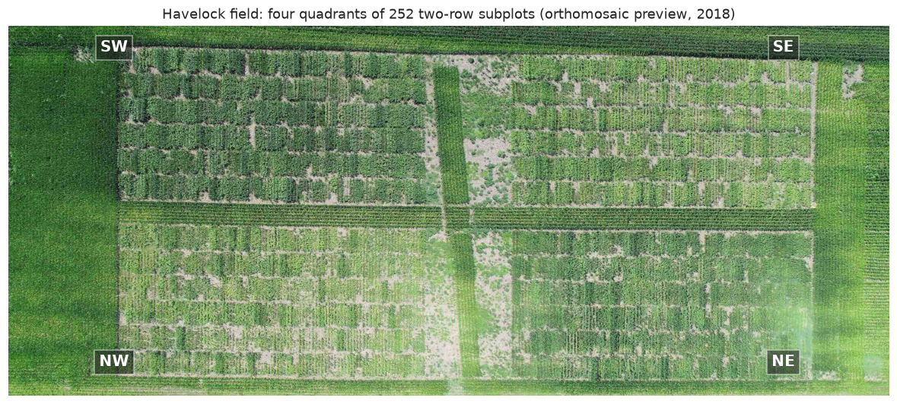
[CHECK] 2,016 plots, four quadrants of 504 plots (252 two-row subplots, each two field rows), 234 entries.
Code
assertlen(fb) ==2016and fb.groupby("quadrant").size().eq(504).all() # [CHECK] design is complete
Pixel-level pipeline on raw UAV frames
Here we rebuild the MATLAB script vi_script.m of the authors on two raw DJI frames from the same field. For each pixel it:
scales R, G, B to 0 to 1 and computes ExG = 2G − R − B (range −2 to 2);
builds four candidate foliage masks:
ExG 131: rescale ExG to 0 to 255 with (ExG + 2)/4 × 255 and keep pixels ≥ 131 (ExG ≥ 0.055);
Otsu pre: Otsu’s threshold on raw ExG;
Otsu post: Otsu’s threshold on the 0 to 255 rescaled ExG;
Custom: a hand-built RGB lookup cube (not distributed, so skipped here);
averages the eight VIs over the foliage pixels and reports canopy coverage = foliage pixels / all pixels;
records the HSL saturation of the foliage pixels (Windows 0 to 240 scale, as in MATLAB) and the frame’s EXIF light value.
The EXIF light value is the exposure value normalised to ISO 100: LV = log₂(N²/t) + log₂(100/ISO), with N the f-number and t the exposure time. A brighter scene forces a shorter exposure or smaller aperture and therefore a higher LV.
Code
def light_value(path):"""EXIF light value LV = log2(N^2 / t) + log2(100 / ISO) of a camera frame.""" exif = Image.open(path).getexif().get_ifd(0x8769) # Exif sub-IFD holds exposure tags t, n, iso =float(exif[33434]), float(exif[33437]), float(exif[34855]) # ExposureTime, FNumber, ISOreturn np.log2(n **2/ t) + np.log2(100/ iso) # exposure value at ISO 100def hsl_saturation(R, G, B):"""HSL saturation on the Windows 0-240 scale, as computed per pixel in vi_script.m.""" cmax, cmin = np.maximum(np.maximum(R, G), B), np.minimum(np.minimum(R, G), B) # channel extremes L = ((cmax + cmin) *240+255) / (2*255) # lightness on the 0-240 scalewith np.errstate(divide="ignore", invalid="ignore"): # grey pixels give 0/0 s_lo = ((cmax - cmin) *240+ (cmax + cmin) /2) / (cmax + cmin) # dark half s_hi = ((cmax - cmin) *240+ (510- cmax - cmin) /2) / (510- cmax - cmin) # bright half S = np.where(L <=120, s_lo, s_hi) # choose by lightnessreturn np.where(cmax == cmin, 0.0, S) # grey pixels have no saturationdef paper_indices(R, G, B):"""The eight VIs of Table 1 (plus raw ExG) from 8-bit R, G, B arrays.""" Rs, Gs, Bs = R /255, G /255, B /255# 0-1 channels tot = Rs + Gs + Bs # brightness for chromatic coordinateswith np.errstate(divide="ignore", invalid="ignore"): # black pixels and R == G give inf/nan r, g, b = Rs / tot, Gs / tot, Bs / tot # chromatic coordinatesreturn {"ExG_raw": 2* Gs - Rs - Bs, # excess green on 0-1 channels"ExG": 2* g - r - b, # excess green on chromatic coords (ExG2)"RGBVI": (G**2- R * B) / (G**2+ R * B), # red-green-blue VI"NGRDI": (G - R) / (G + R), # normalised green-red difference"GLI": (2* G - R - B) / (2* G + R + B), # green leaf index"MGRVI": (G**2- R**2) / (G**2+ R**2), # modified green-red VI"VARI": (G - R) / (G + R - B), # visible atmospherically resistant"VEG": G / (R**0.667* B**(1-0.667)), # vegetative index, a = 0.667"Woebbecke": (G - B) / np.abs(R - G), # Woebbecke index (abs form) }def foliage_masks(R, G, B):"""ExG 131, Otsu pre and Otsu post foliage masks of vi_script.m.""" exg = (2* G - R - B) /255# ExG on 0-1 channels, range -2..2 exg255 = (exg +2) /4*255# rescaled to 0..255return {"ExG 131": exg255 >=131, # fixed threshold of the paper"Otsu pre": exg > threshold_otsu(exg), # Otsu on raw ExG"Otsu post": exg255.astype(np.uint8) > threshold_otsu(exg255.astype(np.uint8))} # Otsu on uint8def plot_traits(img_da, mask):"""Canopy coverage, mean VIs and mean saturation of foliage pixels for one image.""" R, G, B = (img_da.sel(band=c).values.astype("float64") *255for c in ("red", "green", "blue")) # 8-bit vis = paper_indices(R, G, B) # per-pixel indices out = {"canopy_cover_pct": 100* mask.mean(), # share of foliage pixels"saturation": hsl_saturation(R, G, B)[mask].mean()} # mean saturation of foliagefor k, v in vis.items(): # mean of each index over foliage vv = v[mask] # foliage pixels only out[k] = np.nanmean(vv[np.isfinite(vv)]) # skip inf/nan like the MATLAB codereturn out
Code
frames = {k: rs.uav.read_frame(FILES[k], max_dim=1600) for k in ("frame_soil", "frame_plots")} # 0-1 floatsfor k, im in frames.items(): # report size and exposure ex = rs.uav.exposure_stats(im) # GeoLattice brightness and clippingprint(f"{k}: {im.shape}, light value {light_value(FILES[k]):.2f}, "f"mean brightness {ex['mean']:.2f}, saturated {ex['saturated_frac']:.2%}")
frame_soil: (3, 1067, 1600), light value 12.55, mean brightness 0.44, saturated 0.08%
frame_plots: (3, 1067, 1600), light value 12.97, mean brightness 0.45, saturated 0.09%
Code
img = frames["frame_plots"] # frame over two-row plotsR, G, B = (img.sel(band=c).values.astype("float64") *255for c in ("red", "green", "blue")) # 8-bit channelsmasks = foliage_masks(R, G, B) # three foliage masksexg = (2* G - R - B) /255# ExG for displayfig, axes = plt.subplots(2, 3, figsize=(15, 7)) # image, ExG and masksaxes[0, 0].imshow(rs.uav.to_rgb_array(img)); axes[0, 0].set_title("Raw RGB frame") # true colourim0 = axes[0, 1].imshow(exg, cmap="RdYlGn", vmin=-0.1, vmax=0.4); axes[0, 1].set_title("ExG = 2G − R − B")plt.colorbar(im0, ax=axes[0, 1], fraction=0.035) # ExG scaleaxes[0, 2].hist(exg.ravel(), bins=200, color="0.4") # bimodal soil/foliage histogramfor name, thr, c in [("ExG 131", 131/255*4-2, "C3"), ("Otsu pre", threshold_otsu(exg), "C0")]: axes[0, 2].axvline(thr, color=c, label=f"{name}: {thr:.3f}") # mark each thresholdaxes[0, 2].legend(); axes[0, 2].set_title("ExG histogram and thresholds"); axes[0, 2].set_xlim(-0.3, 0.6)for ax, (name, m) inzip(axes[1], masks.items()): # one panel per mask ax.imshow(m, cmap="Greens"); ax.set_title(f"{name}: cover {100* m.mean():.1f}%")for ax in axes.ravel()[[0, 1, 3, 4, 5]]: # hide pixel axes ax.axis("off")plt.tight_layout(); plt.savefig(OUT /"figures/pixel_masks.png"); plt.show()
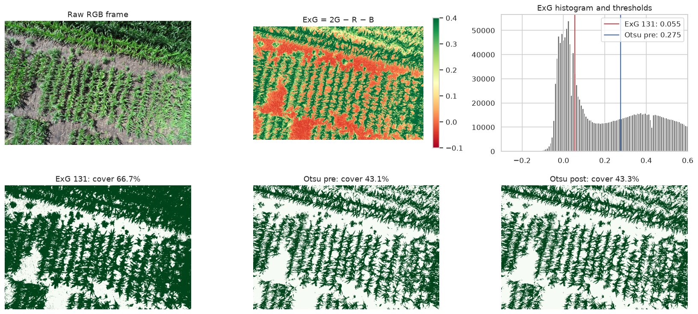
The ExG histogram is bimodal: a soil peak near zero and a foliage shoulder above it. The fixed threshold 131 (ExG ≈ 0.055) sits low in the valley and keeps faint leaves; Otsu places the cut where between-class variance is largest, which moves with the soil/foliage mix of each plot. A fixed threshold therefore gives comparable coverage across plots and dates as long as exposure is stable, which is exactly why exposure needs to be controlled.
Next we compare our NumPy indices with GeoLattice and compute the plot traits on a window that mimics a clipped two-row plot.
Code
py = rs.uav.vegetation_indices(img, ["ExG", "VARI", "GLI", "NGRDI"]) # GeoLattice RGB indices on 0-1 datamine = paper_indices(R, G, B) # paper formulas on 8-bit datafor ours, theirs in [("ExG_raw", "ExG"), ("VARI", "VARI"), ("GLI", "GLI"), ("NGRDI", "NGRDI")]: a, b = mine[ours], py[theirs].values # same index from both routes ok = np.isfinite(a) & np.isfinite(b) & (np.abs(a) <10) # ignore division blow-upsprint(f"{theirs:6s} max |difference| = {np.abs(a[ok] - b[ok]).max():.2e}")py_mask = rs.uav.exg_plant_mask(img) # GeoLattice Otsu-on-ExG mask with cleaningprint(f"GeoLattice exg_plant_mask cover: {100* py_mask.mean():.1f}% "f"(Otsu pre without cleaning: {100* masks['Otsu pre'].mean():.1f}%)")
ExG max |difference| = 1.04e-07
VARI max |difference| = 1.11e-06
GLI max |difference| = 9.90e-08
NGRDI max |difference| = 7.00e-08
GeoLattice exg_plant_mask cover: 47.7% (Otsu pre without cleaning: 43.1%)
Code
h, w = img.sizes["y"], img.sizes["x"] # frame sizeclip = img.isel(y=slice(int(0.25* h), int(0.75* h)), x=slice(int(0.35* w), int(0.65* w))) # plot-like windowRc, Gc, Bc = (clip.sel(band=c).values.astype("float64") *255for c in ("red", "green", "blue"))rows = [] # traits per filterfor name, m in foliage_masks(Rc, Gc, Bc).items(): # same clip, three masks rows.append({"filter": name, **plot_traits(clip, m)}) # coverage, VIs, saturationclip_traits = pd.DataFrame(rows).set_index("filter") # filter x trait tableclip_traits["light_value"] = light_value(FILES["frame_plots"]) # frame-level exposureclip_traits.round(3)
canopy_cover_pct
saturation
ExG_raw
ExG
RGBVI
NGRDI
GLI
MGRVI
VARI
VEG
Woebbecke
light_value
filter
ExG 131
59.815
91.420
0.390
0.330
0.412
0.186
0.223
0.344
0.273
1.619
1.946
12.966
Otsu pre
43.122
104.595
0.486
0.379
0.464
0.219
0.254
0.404
0.321
1.731
1.321
12.966
Otsu post
42.313
104.868
0.490
0.382
0.466
0.221
0.256
0.407
0.322
1.737
1.315
12.966
The VI averages change with the mask because each mask admits a different share of soil-contaminated edge pixels. This is the same table the authors produced for every reference-replicate plot clip of every date, which is what we load next.
Choosing the foliage filter
The authors computed canopy coverage with all four filters and picked the one that best separated +N from −N on the hybrid checks (doc/fig2_cc_check.Rmd). The checks are one genotype, so differences between quadrants are treatment (plus quadrant) effects, not genetics. We repeat the test: Welch’s t-test of check coverage (+N vs −N), pooled over dates, for each filter, after dropping clips with less than 20% cover (failed clips).
ck = cc_check[cc_check["Percent.Cover"] >20] # drop failed clips, as in the paperfilt = [] # one row per filterfor f, sub in ck.groupby("Filter.Type"): # each pixel filter pn = sub.loc[sub.Treatment =="Nitrogen", "Percent.Cover"] # +N coverage mn = sub.loc[sub.Treatment =="No Nitrogen", "Percent.Cover"] # -N coverage t = stats.ttest_ind(pn, mn, equal_var=False) # Welch t-test filt.append({"filter": f, "+N mean": pn.mean(), "-N mean": mn.mean(),"difference": pn.mean() - mn.mean(), "t": t.statistic, "p": t.pvalue})filt = pd.DataFrame(filt).sort_values("t", ascending=False) # strongest separation firstfilt.round(4)
filter
+N mean
-N mean
difference
t
p
1
ExG 131
83.3229
74.2828
9.0401
23.6186
0.0
0
Custom
77.9324
70.3203
7.6120
18.5718
0.0
3
Otsu pre
61.3526
54.3436
7.0089
13.8508
0.0
2
Otsu post
59.9562
54.0014
5.9548
11.9496
0.0
The fixed ExG 131 filter gives the largest t statistic, so, like the authors, we use ExG 131 for everything that follows. Otsu thresholds adapt to each clip, which partly normalises away the very canopy difference we want to detect.
Light, saturation and VI normalisation
The camera set exposure automatically, and some flights were late in the evening (Aug 16, Aug 26, Sept 3), while July 6 used different camera settings. RGB VIs respond to both brightness and colour saturation (Supplementary Figure S3 of the paper), so the authors divided every VI by the frame’s light value and the clip’s mean saturation:
VI_norm = VI / (LV × S̄)
We load the reference-replicate VI table, keep the ExG 131 filter, inspect exposure per date and apply the normalisation.
chk = vi[vi.is_check].copy() # checks only for exposure plotschk["date_lab"] = pd.Categorical(chk.date.map(LABEL), [LABEL[d] for d in DATES], ordered=True) # ordered datesfig, axes = plt.subplots(2, 1, figsize=(13, 7), sharex=True) # LV and saturation by datefor ax, col, lab inzip(axes, ["Light.Value", "Average.Saturation"], ["Light value (EV)", "Colour saturation"]): sns.boxplot(data=chk, x="date_lab", y=col, hue="Treatment", palette=TRT_COL, ax=ax, fliersize=1) # per trt ax.set_ylabel(lab); ax.set_xlabel("") # axis labels ax.legend(handles=ax.get_legend_handles_labels()[0], labels=["+N", "-N"], loc="lower right")axes[0].set_title("Exposure of hybrid-check clips by flight (Supplementary Figure S3)")plt.tight_layout(); plt.savefig(OUT /"figures/light_saturation.png"); plt.show()
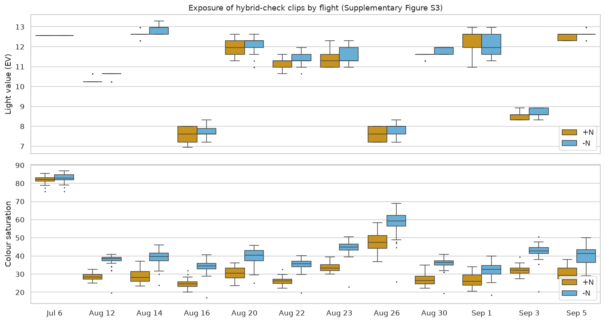
Code
VI_COLS = ["ExG", "ExG2", "RGB", "NGR", "GLI", "MGR", "VARI", "VEG", "Woebbecke..no.abs.", "Woebbecke..abs."]vin = vi.copy() # normalised copyvin[VI_COLS] = vin[VI_COLS].div(vin["Light.Value"], axis=0).div(vin["Average.Saturation"], axis=0) # VI/(LV*S)vin[VI_COLS] *=1000# x1000, as in the paper's tablesvin = vin.drop(columns=["ExG", "Woebbecke..no.abs."]).rename(columns=VI8) # keep the 8 paper VIs, paper namescmp= pd.DataFrame({"VEG raw": vi[vi.is_check].groupby("date").VEG.median(), # check medians per flight"VEG normalised": vin[vin.is_check].groupby("date").VEG.median()}).reindex(DATES)cmp.round(3)
VEG raw
VEG normalised
date
July6
1.730
1.678
Aug12
1.186
3.526
Aug14
1.181
2.719
Aug16
1.173
5.231
Aug20
1.186
2.877
Aug22
1.162
3.319
Aug23
1.235
2.665
Aug26
1.222
2.976
Aug30
1.164
3.101
Sept1
1.150
3.163
Sept3
1.163
3.767
Sept5
1.189
2.709
Read the table carefully. Raw check VEG is nearly flat across August and September, but normalised VEG jumps on the dark Aug 16 and Sept 3 flights, because dividing by a low light value inflates the index. The normalisation is therefore mainly a within-flight correction: the light value is almost constant within a flight, while saturation varies from clip to clip and removes plot-to-plot colour differences caused by the camera. Normalised VIs should be compared between plots of the same date (as the paper does for every correlation and GWAS), not between dates. Note also that July 6 has by far the highest saturation: a different camera setting, which the authors flag as a limitation.
[CHECK] 11,591 ExG 131 records (1,008 plots × 12 dates, minus missing clips) and no infinite normalised values.
Hybrid checks (Figure 2A). Is check canopy coverage higher under +N on each date? Welch’s t-test with Benjamini-Hochberg FDR across the 12 dates.
Inbred lines (Figure 2B). For each genotype and date, average the replicates within each treatment and form the ratio +N/−N. A paired t-test (each genotype is its own control) asks whether +N coverage is higher on average.
Code
cg = cc_geno[cc_geno["Filter.Type"] =="ExG 131"] # ExG 131 genotype coveragegm = (cg.groupby(["date", "Treatment", "Pedigree"])["Percent.Cover"].mean() # rep means per treatment .unstack("Treatment").dropna()) # genotypes present in both treatmentsgm["ratio"] = gm["Nitrogen"] / gm["No Nitrogen"] # +N / -N ratiogeno_test = [] # paired tests per datefor d in DATES: # in flight order x = gm.loc[d] # one date t = stats.ttest_rel(x["Nitrogen"], x["No Nitrogen"]) # paired t-test across genotypes geno_test.append({"date": LABEL[d], "n_geno": len(x), "diff": (x["Nitrogen"] - x["No Nitrogen"]).mean(),"mean_ratio": x.ratio.mean(), "p": t.pvalue})geno_test = pd.DataFrame(geno_test) # table of resultsgeno_test["fdr"] = multipletests(geno_test.p, method="fdr_bh")[1] # FDR across datespub = pd.read_csv(FILES["pub_cc_geno"]) # published values (Figure 2B)assert np.allclose(geno_test.p, pub.pval) and np.allclose(geno_test.mean_ratio, pub.ratio) # [CHECK] exactgeno_test.round(4)
date
n_geno
diff
mean_ratio
p
fdr
0
Jul 6
225
6.1832
1.2436
0.0000
0.0000
1
Aug 12
225
2.7568
1.0908
0.0000
0.0001
2
Aug 14
225
-0.0312
1.0380
0.9674
0.9674
3
Aug 16
225
1.9914
1.0656
0.0073
0.0087
4
Aug 20
225
2.4133
1.1024
0.0016
0.0027
5
Aug 22
225
3.5368
1.1262
0.0000
0.0000
6
Aug 23
225
3.8339
1.1126
0.0000
0.0000
7
Aug 26
225
4.3106
1.1081
0.0000
0.0000
8
Aug 30
225
2.2082
1.1184
0.0072
0.0087
9
Sep 1
225
3.8599
1.1712
0.0000
0.0000
10
Sep 3
225
1.8688
1.0913
0.0049
0.0073
11
Sep 5
225
1.3100
1.1543
0.0514
0.0560
Code
ck131 = ck[ck["Filter.Type"] =="ExG 131"] # checks with >20% covercheck_test = [] # Welch tests per datefor d in DATES: # in flight order s = ck131[ck131.date == d] # one date pn, mn = s.loc[s.Treatment =="Nitrogen", "Percent.Cover"], s.loc[s.Treatment =="No Nitrogen", "Percent.Cover"] check_test.append({"date": LABEL[d], "n_+N": len(pn), "n_-N": len(mn), "+N": pn.mean(), "-N": mn.mean(),"diff": pn.mean() - mn.mean(), "p": stats.ttest_ind(pn, mn, equal_var=False).pvalue})check_test = pd.DataFrame(check_test) # results tablecheck_test["fdr"] = multipletests(check_test.p, method="fdr_bh")[1] # FDRpub_ck = pd.read_csv(FILES["pub_cc_check"]) # published Figure 2A statisticscheck_test["published_diff"] = pub_ck["diff"].values # for comparisoncheck_test["published_p"] = pub_ck["pval"].valuescheck_test.round(4)
date
n_+N
n_-N
+N
-N
diff
p
fdr
published_diff
published_p
0
Jul 6
64
65
69.5355
59.4230
10.1125
0.0
0.0
7.9728
0.0000
1
Aug 12
64
65
87.5300
79.2846
8.2455
0.0
0.0
10.4700
0.0000
2
Aug 14
64
65
84.3368
77.4236
6.9132
0.0
0.0
3.3249
0.0004
3
Aug 16
64
65
84.0276
74.0084
10.0192
0.0
0.0
5.3029
0.0000
4
Aug 20
64
65
84.9665
74.9520
10.0145
0.0
0.0
4.5488
0.0000
5
Aug 22
64
65
84.3275
75.7314
8.5961
0.0
0.0
10.9609
0.0000
6
Aug 23
64
65
87.9744
79.2465
8.7279
0.0
0.0
10.5296
0.0000
7
Aug 26
64
65
89.2822
80.4796
8.8026
0.0
0.0
6.2984
0.0001
8
Aug 30
64
65
85.2740
76.5148
8.7592
0.0
0.0
10.4140
0.0000
9
Sep 1
64
65
86.4154
76.3394
10.0760
0.0
0.0
9.0035
0.0000
10
Sep 3
64
65
77.9083
67.4094
10.4989
0.0
0.0
8.5320
0.0000
11
Sep 5
64
65
78.2969
70.5808
7.7161
0.0
0.0
1.6403
0.0597
The genotype-level results reproduce the published statistics exactly (the assertion above passes). For the checks, the direction agrees on every date but our differences are larger and the p-values smaller than the published ones. The published check statistics were computed from all replicate images of every check plot (a larger table that is not in the repository), whereas we only have the single most nadir reference replicate per plot. Off-nadir replicates see the canopy at an angle, mix in neighbouring rows and add noise, which dilutes the difference: one concrete reason the paper insists on reference replicates.
Code
fig, axes = plt.subplots(2, 1, figsize=(13, 8)) # Figure 2A and 2Bc131 = cc_check[cc_check["Filter.Type"] =="ExG 131"].copy() # all check clipsc131["date_lab"] = pd.Categorical(c131.date.map(LABEL), [LABEL[d] for d in DATES], ordered=True)sns.violinplot(data=c131, x="date_lab", y="Percent.Cover", hue="Treatment", palette=TRT_COL, cut=0, inner="box", ax=axes[0]) # check coverage by treatmentaxes[0].legend(handles=axes[0].get_legend_handles_labels()[0], labels=["+N", "-N"], loc="lower right")axes[0].set(xlabel="", ylabel="Canopy coverage (%)", title="A. Hybrid checks")gr = gm.reset_index() # genotype ratios, long formgr = gr[gr.ratio <2] # trim extreme ratios for display, as the papergr["date_lab"] = pd.Categorical(gr.date.map(LABEL), [LABEL[d] for d in DATES], ordered=True)sns.violinplot(data=gr, x="date_lab", y="ratio", color="0.75", cut=0, inner="box", ax=axes[1]) # ratio violinsaxes[1].axhline(1, color="red", ls="--") # no N responsefor i, (p, r) inenumerate(zip(geno_test.fdr, geno_test.mean_ratio)): # mark significant datesif p <0.05: axes[1].text(i, 1.95, "*", ha="center", fontsize=16)axes[1].set(xlabel="", ylabel="Canopy coverage (+N / −N)", title=f"B. {len(gm.loc[DATES[0]])} inbred lines in both treatments (* FDR < 0.05)")plt.tight_layout(); plt.savefig(OUT /"figures/fig2_canopy_coverage.png"); plt.show()
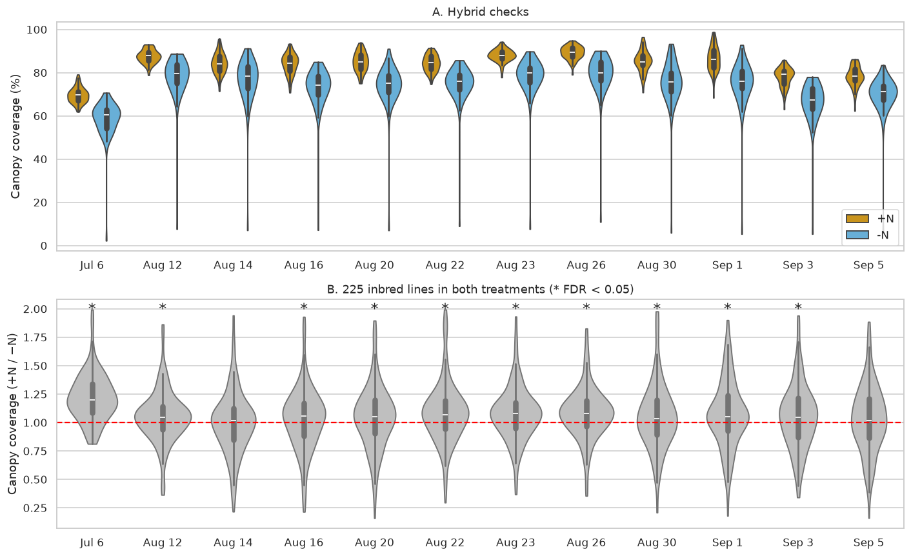
Code
gen_ratio = gm.ratio.groupby("Pedigree").mean() # season-mean ratio per genotypeprint(f"Genotypes with season-mean ratio > 1.5: {(gen_ratio >1.5).sum()}; "f"< 0.8: {(gen_ratio <0.8).sum()} of {len(gen_ratio)}")print(f"Genotypes with ratio < 0.8 on at least one date: {(gm.ratio <0.8).groupby('Pedigree').any().sum()}")consist = gm.ratio.unstack("date")[DATES].corr(method="spearman") # rank stability of ratios across datesoff = consist.where(~np.eye(12, dtype=bool)).stack() # off-diagonal correlationsprint(f"Spearman correlation of genotype ratios between dates: median {off.median():.2f}")
Genotypes with season-mean ratio > 1.5: 17; < 0.8: 25 of 225
Genotypes with ratio < 0.8 on at least one date: 72
Spearman correlation of genotype ratios between dates: median 0.74
Most lines respond positively to N early in the season (mean ratio 1.24 on July 6), and the response shrinks as plants mature, since the N was applied before planting. The paper reports 17 genotypes with a ratio above 1.5, which matches our season-mean ratio. Its count of 76 genotypes with ratio below 0.8 is not reproduced by the season mean (25) and is close to the 72 genotypes that fall below 0.8 on at least one date, so the exact definition used is unclear; such ambiguities are common in supplementary analyses and worth noting when replicating. Genotype ratios are fairly consistent between dates (median Spearman correlation 0.74), as the paper notes.
Vegetation index response to nitrogen
Do the normalised greenness indices also separate +N from −N? For the hybrid checks we fit, for each VI,
VI_norm ~ Treatment + date
so the treatment effect is tested after removing date-to-date shifts (the paper’s pval_check_VIs.csv). Most indices should be higher under +N (greener leaves), while Woebbecke behaves in the opposite direction.
Code
chk_n = vin[vin.is_check] # normalised check VIsvi_trt = [] # one model per VIfor v in VI8.values(): # eight indices fit = smf.ols(f"Q('{v}') ~ C(Treatment, levels=['No Nitrogen', 'Nitrogen']) + C(date)", data=chk_n).fit() # -N baseline term = [k for k in fit.params.index if k.startswith("C(Treatment")][0] # the +N effect term vi_trt.append({"VI": v, "+N effect": fit.params[term], "t": fit.tvalues[term], "p": fit.pvalues[term]})vi_trt = pd.DataFrame(vi_trt) # results tablevi_trt
VI
+N effect
t
p
0
ExG
0.052442
41.364540
6.930301e-249
1
RGBVI
0.071302
42.222887
5.088189e-256
2
NGRDI
0.074810
47.878858
1.417023e-302
3
GLI
0.039141
42.964638
3.569110e-262
4
MGRVI
0.147612
47.756137
1.414996e-301
5
VARI
0.144709
47.921727
6.344562e-303
6
VEG
0.907197
44.119667
9.867538e-272
7
Woebbecke
-2.021734
-21.527676
1.326129e-89
Code
long= vin[vin.is_check].melt(id_vars=["date", "Treatment"], value_vars=list(VI8.values()), # long format var_name="VI", value_name="value")long["date_lab"] = pd.Categorical(long.date.map(LABEL), [LABEL[d] for d in DATES], ordered=True)g = sns.catplot(data=long, x="date_lab", y="value", hue="Treatment", row="VI", kind="box", palette=TRT_COL, height=1.6, aspect=7, sharey=False, fliersize=0.5, legend=False) # Supplementary Figure S4g.set_axis_labels("", "VI x 1000"); g.set_titles("{row_name}") # labelsplt.savefig(OUT /"figures/vi_checks_by_date.png"); plt.show()
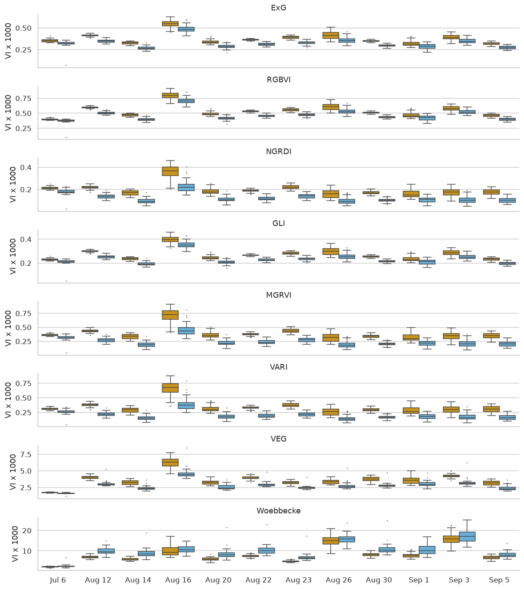
Code
gv = (vin[~vin.is_check].groupby(["date", "Treatment", "Pedigree"])[list(VI8.values())].mean() # rep means .unstack("Treatment"))ratio_vi = pd.DataFrame({v: (gv[(v, "Nitrogen")] / gv[(v, "No Nitrogen")]) for v in VI8.values()}) # +N/-Nprint("Median genotype VI ratio (+N/-N) over all dates:")print(ratio_vi.median().round(3).to_string())
Median genotype VI ratio (+N/-N) over all dates:
ExG 1.080
RGBVI 1.074
NGRDI 1.316
GLI 1.082
MGRVI 1.313
VARI 1.360
VEG 1.167
Woebbecke 0.922
All indices except Woebbecke are higher under +N on the checks, and the genotype ratios deviate from 1 in the same directions (Supplementary Figures S4 and S5): after normalisation, the RGB indices carry an N signal.
VIs as predictors of leaf and yield traits
Ground truth was measured on the same plots: leaf nitrogen (%), leaf area (cm², three sampled leaves) and leaf nutrients from leaf samples, and 20-kernel weight (g) from hand-harvested ears. For each date and VI we compute the Pearson correlation with each trait (Figure 3A), then look at the best pairs on August 22 (Figure 3B to 3D). Plot ids join the tables: Row in the image table equals Plant id in the leaf table and row in the yield table.
cor_rows = [] # trait x VI x date correlationsfor (d, trait, v) in [(d, t, v) for d in DATES for t in TRAITS for v in VI8.values()]: s = vt.loc[vt.date == d, [v, trait]].dropna() # complete pairs only r, p = stats.pearsonr(s[v], s[trait]) # Pearson correlation cor_rows.append({"date": d, "trait": trait, "VI": v, "r": r, "p": p, "n": len(s)})cors = pd.DataFrame(cor_rows) # long table of correlationscors.to_csv(OUT /"tables/vi_trait_correlations.csv", index=False) # exportsummary = cors.assign(abs_r=cors.r.abs()).groupby("trait").abs_r.agg(["mean", "std", "max"]).round(2)summary # paper: 0.27, 0.24, 0.16 mean |r|
mean
std
max
trait
20 kernel weight
0.25
0.14
0.41
Leaf N
0.27
0.18
0.73
Leaf area
0.33
0.14
0.54
Code
fig, axes = plt.subplots(3, 1, figsize=(9, 10), sharex=True) # Figure 3Apal =dict(zip(VI8.values(), sns.color_palette("tab10", 8))) # one colour per VIfor ax, trait inzip(axes, TRAITS): # one panel per traitfor v in VI8.values(): # one line per VI s = cors[(cors.trait == trait) & (cors.VI == v)].set_index("date").loc[DATES] ax.plot([LABEL[d] for d in DATES], s.r.abs(), marker="o", ms=3, color=pal[v], label=v) ax.axvline(LABEL["Aug22"], color="0.5", ls="--") # selected date ax.set_ylabel(f"|r| with {trait}") # panel labelaxes[0].legend(ncol=4, fontsize=8, loc="upper left")plt.xticks(rotation=45); plt.tight_layout(); plt.savefig(OUT /"figures/fig3a_correlations.png"); plt.show()
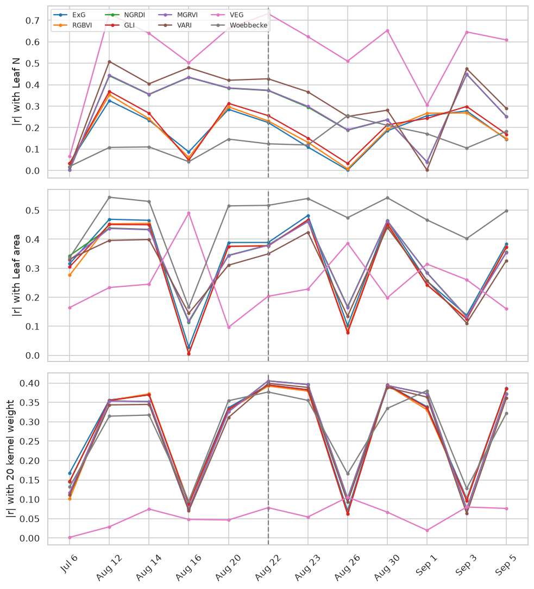
Code
best = cors.loc[cors.groupby("trait").r.apply(lambda s: s.abs().idxmax())] # strongest |r| per traitprint(best[["trait", "date", "VI", "r", "p", "n"]].round(4).to_string(index=False))
trait date VI r p n
20 kernel weight Aug22 NGRDI 0.4055 0.0 519
Leaf N Aug22 VEG 0.7313 0.0 498
Leaf area Aug12 Woebbecke -0.5449 0.0 499
Code
pairs = [("VEG", "Leaf N"), ("Woebbecke", "Leaf area"), ("VARI", "20 kernel weight")] # Figure 3B to 3Da22 = vt[vt.date =="Aug22"] # selected flightfig, axes = plt.subplots(1, 3, figsize=(15, 4.5)) # three scatter plotsfor ax, (v, trait) inzip(axes, pairs): # each VI-trait pair s = a22[[v, trait, "Treatment"]].dropna() # complete casesif v =="Woebbecke": # the paper drops a few extreme values s = s[s[v] <40] r, p = stats.pearsonr(s[v], s[trait]) # correlation sns.regplot(data=s, x=v, y=trait, ax=ax, scatter=False, color="C0") # fit with 95% CIfor trt, c in TRT_COL.items(): # points by treatment q = s[s.Treatment == trt] ax.scatter(q[v], q[trait], s=10, color=c, label=TRT_LAB[trt], alpha=0.7) ax.set_title(f"R = {r:.2f}, p = {p:.1e} (n = {len(s)})"); ax.legend()plt.suptitle("August 22: VEG vs leaf N, Woebbecke vs leaf area, VARI vs 20-kernel weight")plt.tight_layout(); plt.savefig(OUT /"figures/fig3bcd_scatter.png"); plt.show()
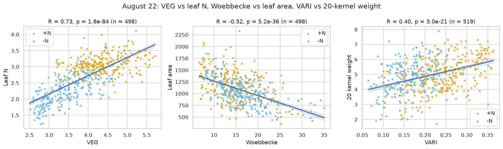
These reproduce the paper’s headline values: VEG vs leaf N R = 0.73, Woebbecke vs leaf area R = −0.52 and VARI vs 20-kernel weight R = 0.40 on August 22. Correlations dip on the low-light flights (Aug 16, Aug 26) even after normalisation, so flight time of day remains a design variable you cannot fully correct afterwards. Part of the strong VEG and leaf-N relation is the treatment itself (+N plots are greener and richer in N); within one treatment the correlation is weaker, which you can check in the exercises.
Season traits from the time series
Twelve flights let us summarise each genotype’s season with a few robust traits instead of 12 correlated numbers:
max: the highest canopy coverage, a proxy for maximum canopy size;
doy_max: the day of year it was reached;
auc: the area under the coverage curve (trapezoid rule, % × days), integrating size over time;
senescence rate: the slope of coverage from Aug 23 to Sept 5 (% per day; negative = canopy loss);
N response: the season-mean +N/−N ratio computed above.
There is a 37-day gap between July 6 and August 12, so “green-up” rates cannot be estimated reliably and are left out. A 4-parameter logistic (rs.uav.fit_logistic) is fitted to the check means to illustrate curve fitting on the senescing part of the season.
Code
cc_long = cg.assign(doy=cg.date.map(DOY)) # coverage with day of yearcc_gt = (cc_long.groupby(["Pedigree", "Treatment", "doy"])["Percent.Cover"].mean() # rep mean per day .reset_index().sort_values("doy"))LATE = [DOY[d] for d in ["Aug23", "Aug26", "Aug30", "Sept1", "Sept3", "Sept5"]] # senescence windowdef season_traits(df):"""Max, timing, AUC and late-season slope of one genotype x treatment coverage curve.""" t, y = df.doy.to_numpy(float), df["Percent.Cover"].to_numpy(float) # time and coverage late = df.doy.isin(LATE) # senescence flights slope = np.polyfit(t[late], y[late], 1)[0] if late.sum() >=3else np.nan # linear decline ratereturn pd.Series({"max": y.max(), "doy_max": t[np.argmax(y)], "auc": np.trapezoid(y, t),"senescence_rate": slope, "n_dates": len(t)})season = cc_gt.groupby(["Pedigree", "Treatment"]).apply(season_traits).reset_index() # one row per geno x trtseason = season[season.n_dates ==12] # complete curves onlyseason.groupby("Treatment")[["max", "doy_max", "auc", "senescence_rate"]].mean().round(2)
max
doy_max
auc
senescence_rate
Treatment
Nitrogen
61.31
231.55
2917.34
-1.51
No Nitrogen
57.97
232.29
2701.28
-1.31
Code
fig, axes = plt.subplots(1, 2, figsize=(14, 4.5)) # curves and logistic fitfor trt, c in TRT_COL.items(): # per treatment sub = cc_gt[cc_gt.Treatment == trt] # genotype curves q = sub.groupby("doy")["Percent.Cover"].quantile([0.1, 0.5, 0.9]).unstack() # spread across genotypes axes[0].fill_between(q.index, q[0.1], q[0.9], color=c, alpha=0.25) # 10-90% band axes[0].plot(q.index, q[0.5], "o-", color=c, label=f"{TRT_LAB[trt]} median across lines")axes[0].set(xlabel="Day of year (2019)", ylabel="Canopy coverage (%)", title="Coverage trajectories")axes[0].legend()for trt, c in TRT_COL.items(): # logistic fit to check senescence s = (c131[c131.Treatment == trt].assign(doy=lambda d: d.date.map(DOY)) # check clips by day .groupby("doy")["Percent.Cover"].mean()) s = s[s.index >= DOY["Aug12"]] # plateau and senescence phase dates = pd.to_datetime("2019-01-01") + pd.to_timedelta(s.index -1, unit="D") # back to calendar dates fit = rs.uav.fit_logistic(dates, s.values, decreasing=True) # 4-parameter logistic grid = pd.date_range(dates.min(), dates.max(), freq="D") # daily prediction grid axes[1].plot(s.index, s.values, "o", color=c) # observed check meansprint(f"{TRT_LAB[trt]} checks: logistic midpoint {fit['mid_date']:%b %d}, R2 = {fit['r2']:.2f}") # fit quality axes[1].plot(grid.dayofyear, fit["predict"](grid), "-", color=c, label=f"{TRT_LAB[trt]}: midpoint {fit['mid_date']:%b %d}, R² {fit['r2']:.2f}")axes[1].set(xlabel="Day of year (2019)", ylabel="Check coverage (%)", title="Logistic fit, hybrid checks")axes[1].legend(); plt.tight_layout(); plt.savefig(OUT /"figures/season_curves.png"); plt.show()
The flights capture the plateau and the start of senescence; the logistic fit is loose (the late-season decline is noisy and partly driven by exposure), which is a reminder that more frequent and earlier flights are needed before curve parameters can be treated as traits. The simple summaries (max, AUC, late slope) are more robust with this sampling.
[CHECK] Season traits exist for over 200 genotypes per treatment, and every doy_max lies within the flight window.
Before mapping genes we should know how much of a trait’s variation is genetic. With two replicates (quadrants) per treatment, a genotype model per date and treatment gives the variance components:
with r = 2 replicates. Field gradients (soil, drainage, edge effects) inflate σ²_e. Each quadrant has six ranges, and plants were blocked by height and maturity, so we also fit range-within-quadrant as a fixed effect and see whether H² improves. A field map of residual coverage shows whether such trends exist.
Code
def heritability(df, trait, spatial=False):"""Entry-mean broad-sense heritability from a two-rep genotype ANOVA (optionally range-adjusted).""" d = df.dropna(subset=[trait]) # complete records d = d[d.groupby("Pedigree")[trait].transform("size") ==2] # genotypes with both repsif d.Pedigree.nunique() <20: # one replicate only (July 6 flight)return np.nan # not estimable form =f"Q('{trait}') ~ C(quadrant) + C(Pedigree)"# rep (quadrant) + genotypeif spatial: # add range within quadrant form =f"Q('{trait}') ~ C(quadrant):C(frange) + C(Pedigree)" fit = smf.ols(form, data=d).fit() # least-squares fitimport statsmodels.api as sm # ANOVA table helper aov = sm.stats.anova_lm(fit, typ=2) # type II sums of squares ms_g = aov.loc["C(Pedigree)", "sum_sq"] / aov.loc["C(Pedigree)", "df"] # genotype mean square ms_e = aov.loc["Residual", "sum_sq"] / aov.loc["Residual", "df"] # error mean square var_g =max((ms_g - ms_e) /2, 0.0) # genetic variance, r = 2return var_g / (var_g + ms_e /2) if var_g >0else0.0# entry-mean H2traits_h2 = ["Percent.Cover"] +list(VI8.values()) # canopy coverage + 8 VIscov = cg[["Row", "date", "Percent.Cover"]] # coverage per plot-datehdat = vin[~vin.is_check].merge(cov, on=["Row", "date"], how="left") # VIs + coverage, inbreds onlyh_rows = [] # H2 per trait x date x treatmentfor (d, trt), sub in hdat.groupby(["date", "Treatment"]): # 24 date x treatment groupsfor tr in traits_h2: # 9 traits h_rows.append({"date": d, "Treatment": trt, "trait": tr.replace("Percent.Cover", "Canopy"),"H2": heritability(sub, tr), "H2_range": heritability(sub, tr, spatial=True)})h2 = pd.DataFrame(h_rows) # long tableh2.to_csv(OUT /"tables/heritability.csv", index=False) # exporth2.groupby("trait")[["H2", "H2_range"]].mean().sort_values("H2", ascending=False).round(2)
H2
H2_range
trait
Canopy
0.89
0.90
VEG
0.77
0.80
Woebbecke
0.73
0.74
ExG
0.60
0.64
RGBVI
0.60
0.63
GLI
0.59
0.63
MGRVI
0.57
0.61
NGRDI
0.57
0.61
VARI
0.56
0.61
Code
fig, axes = plt.subplots(1, 2, figsize=(15, 4.5), sharey=True) # H2 over time per treatmentfor ax, trt inzip(axes, TRT_COL): # +N and -N panels piv = h2[h2.Treatment == trt].pivot(index="date", columns="trait", values="H2_range").loc[DATES]for tr in piv.columns: # one line per trait ax.plot([LABEL[d] for d in DATES], piv[tr], marker="o", ms=3, lw=2.5if tr =="Canopy"else1, color="k"if tr =="Canopy"elseNone, label=tr) ax.set_title(f"Range-adjusted H², {TRT_LAB[trt]}"); ax.tick_params(axis="x", rotation=45)axes[0].set_ylabel("Broad-sense heritability (entry mean)"); axes[1].legend(ncol=3, fontsize=8)plt.tight_layout(); plt.savefig(OUT /"figures/heritability.png"); plt.show()
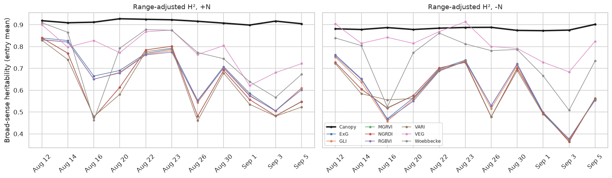
Code
aug12 = cg[cg.date =="Aug12"].merge(vi[["Row", "quadrant", "fcol", "frange"]].drop_duplicates(), on="Row")aug12["resid"] = smf.ols("Q('Percent.Cover') ~ C(Pedigree)", data=aug12).fit().resid # remove genotype meansfig, axes = plt.subplots(2, 2, figsize=(14, 5)) # quadrants in field positionfor ax, q inzip(axes.ravel(), ["NW", "NE", "SW", "SE"]): # NW NE top, SW SE bottom grid = aug12[aug12.quadrant == q].pivot_table(index="frange", columns="fcol", values="resid") # range x col im = ax.imshow(grid, cmap="RdBu", vmin=-30, vmax=30, aspect="auto") # residual map ax.set_title(f"{q} ({'+N'if q in ('NE', 'SW') else'-N'})"); ax.set_xlabel("Two-row column"); ax.set_ylabel("Range")fig.colorbar(im, ax=axes, label="Residual coverage (%)", fraction=0.02)fig.suptitle("Canopy coverage on Aug 12 after removing genotype means: field trends"); plt.show()
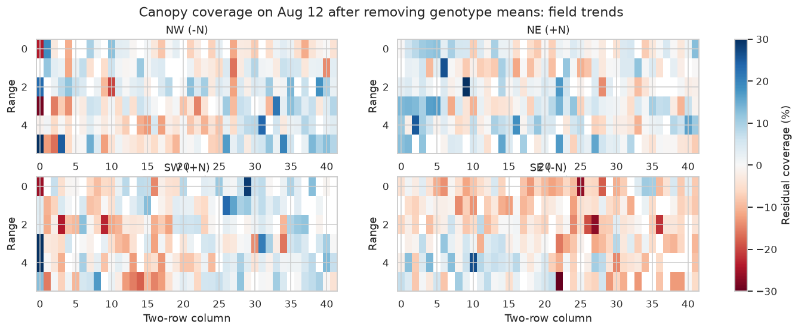
Canopy coverage is the most heritable image trait (H² about 0.9 on every date), followed by VEG and Woebbecke, while ExG, GLI, NGRDI, MGRVI, RGBVI and VARI sit around 0.6. The heritability of the greenness indices drops on the low-light flights (Aug 16, Aug 26, Sept 3) whereas canopy coverage does not: a mask is less sensitive to exposure than a colour ratio. July 6 was flown over only one replicate per treatment, so H² is not estimable there. Adjusting for range within quadrant raises H² only slightly; the residual maps show patchy rather than smooth trends, so a 2D spline model (for example SpATS) would be the next step in a full analysis.
Code
h2_cc =float(h2[(h2.trait =="Canopy") & (h2.date =="Aug12") & (h2.Treatment =="No Nitrogen")].H2_range.iloc[0])print(f"Canopy coverage H2 on Aug 12 (-N), used for the simulation below: {h2_cc:.2f}")assert0< h2_cc <1# [CHECK] estimable heritability
Canopy coverage H2 on Aug 12 (-N), used for the simulation below: 0.88
Published GWAS regions
Table S3 lists the 345 candidate regions the authors found with GEMMA: for each trait (canopy coverage and 8 VIs), treatment and date, the region boundaries, the lead SNP and its p-value, and the number of significant SNPs. A region was called when more than five SNPs passed p < 1.2 × 10⁻⁶ (1/n, with n = 769,690 independent SNPs from LD pruning) within ±50 kb windows.
A single-date hit can be a false positive; a region found on several dates (independent flights) is more credible. We merge overlapping regions of the same trait across dates and treatments (allowing a 100 kb gap) and count how often each was detected.
def merge_regions(df, gap=100_000):"""Cluster overlapping (or within `gap` bp) regions on the same chromosome; returns cluster ids.""" df = df.sort_values(["chrom", "start"]).copy() # genome order cid, c, end, ch = [], -1, -1, None# running cluster statefor r in df.itertuples(): # sweep along the genomeif r.chrom != ch or r.start > end + gap: # new cluster c, end, ch = c +1, r.end, r.chromelse: # extend current cluster end =max(end, r.end) cid.append(c) df["cluster"] = cid # attach idsreturn dfloci = [] # one row per recurrent locusfor trait, sub in gw.groupby("trait"): # merge within each trait m = merge_regions(sub) # cluster across dates and treatmentsfor cid, x in m.groupby("cluster"): # summarise each cluster loci.append({"trait": trait, "chrom": x.chrom.iloc[0], "start": x.start.min(), "end": x.end.max(),"n_detections": len(x), "n_dates": x.date.nunique(),"treatments": "/".join(sorted(set(x.treatment.str.split().str[0]))),"best_p": x.p_lead.min(), "lead_pos": x.loc[x.p_lead.idxmin(), "pos_lead"]})loci = pd.DataFrame(loci) # all clustersrecurrent = loci[loci.n_detections >=3].sort_values(["chrom", "start"]) # found 3+ timesprint(f"{len(loci)} trait-specific loci; {len(recurrent)} detected 3 or more times (paper: 29)")recurrent[recurrent.trait =="Canopy"]
220 trait-specific loci; 28 detected 3 or more times (paper: 29)
trait
chrom
start
end
n_detections
n_dates
treatments
best_p
lead_pos
0
Canopy
1
83770813
83874504
5
5
High
5.230000e-08
83820963
1
Canopy
1
208869082
209142501
12
8
High/Low
2.550000e-10
209091350
2
Canopy
1
280944269
281046209
9
6
High/Low
6.810000e-08
280994455
4
Canopy
3
169434086
169650849
5
5
High
6.000000e-08
169547291
5
Canopy
4
7302181
7452920
9
6
High/Low
6.740000e-08
7356521
6
Canopy
5
32724158
32947941
3
3
Low
2.410000e-08
32778378
7
Canopy
5
91731758
92001381
3
3
High
3.930000e-08
91840746
Code
rec_m = merge_regions(recurrent.assign(date="x")) # overlap recurrent loci across traitsmulti = rec_m.groupby("cluster").trait.nunique() # traits per shared locusprint(f"Unique recurrent genomic regions across traits: {rec_m.cluster.nunique()}; "f"shared by 2+ traits: {(multi >=2).sum()}")hcf = loci[(loci.trait =="Canopy") & (loci.chrom ==1) & (loci.start <209.2e6) & (loci.end >208.8e6)]print("Chr1 208.8-209.1 Mb canopy locus (HCF244 homolog Zm00001d031997 nearby):")hcf[["chrom", "start", "end", "n_detections", "n_dates", "treatments", "best_p", "lead_pos"]]
Unique recurrent genomic regions across traits: 25; shared by 2+ traits: 2
Chr1 208.8-209.1 Mb canopy locus (HCF244 homolog Zm00001d031997 nearby):
With our merge rule we recover 28 trait-specific loci detected three or more times (the paper reports 29; the exact window and counting rule of the paper is not fully specified). The canopy-coverage locus on chromosome 1 near 209.0 Mb is the most recurrent signal, detected on 8 dates and under both N conditions, consistent with the paper’s candidate gene Zm00001d031997 (HCF244, photosystem II assembly) 4.6 kb from the lead SNP. Woebbecke contributes the most regions overall and also most of the recurrent ones (16 of 28), followed by canopy coverage (7), both among the most heritable image traits in the previous section.
GWAS and genomic prediction methods [SIMULATED]
Before touching real genotypes it pays to run the methods where the answer is known. This section simulates markers and a trait with planted QTL, so we can check that the mixed model removes structure-driven inflation, that peak calling recovers true QTL, and how accurate GBLUP can be. The next two sections run the same models on the real HapMap3 genotypes.
The simulation is built to look like a maize diversity panel:
three subpopulations (think stiff stalk, non-stiff stalk, tropical) with F_ST ≈ 0.1 (Balding-Nichols model);
10 chromosomes with the AGPv4 lengths and 1,500 SNPs each, with linkage disequilibrium created by copying 8 founder haplotypes per subpopulation in tracts of about 5 Mb;
inbred lines, so each line carries two identical haplotypes (dosage 0 or 2);
a trait with H² equal to the canopy-coverage heritability estimated above, controlled by 12 major QTL (one of them placed at chromosome 1, 209.09 Mb), 300 small-effect loci and a subpopulation mean shift that creates confounding.
Steps, as in the outline: marker QC (call rate, MAF), kinship (VanRaden), PCA, a mixed-model GWAS that mirrors GEMMA (y = Xβ + gα + u + ε, u ~ N(0, Kσ²_g)), genomic inflation, peak calling, and GBLUP with cross-validation.
Code
lines =sorted(fb.loc[fb.Genotype !="Check", "Genotype"].unique()) # the real 233 inbred namesn, n_chr, m_chr =len(lines), 10, 1500# lines, chromosomes, SNPs per chromosomepop = rng.choice(3, size=n, p=[0.35, 0.35, 0.30]) # subpopulation of each linesnp_rows, hap_blocks = [], [] # SNP map and genotype blocksfor c inrange(1, n_chr +1): # chromosome by chromosome pos = np.sort(rng.choice(CHR_LEN[c], m_chr, replace=False)) # SNP positions (bp) p_anc = rng.uniform(0.05, 0.95, m_chr) # ancestral allele frequency fst =0.1# population differentiation a, b = p_anc * (1- fst) / fst, (1- p_anc) * (1- fst) / fst # Balding-Nichols beta parameters p_pop = rng.beta(a, b, size=(3, m_chr)) # frequency in each subpopulation fresh = (rng.random((3, 8, m_chr)) < p_pop[:, None, :]).astype(np.int8) # independent founder alleles founders = fresh.copy() # 8 founder haplotypes per subpopulation keep_prev = rng.random((3, 8, m_chr)) <0.85# founder LD: neighbours often share statefor j inrange(1, m_chr): # walk along the founder haplotypes founders[:, :, j] = np.where(keep_prev[:, :, j], founders[:, :, j -1], fresh[:, :, j]) gap = np.diff(pos, prepend=pos[0]) /1e6# Mb between consecutive SNPs switch = rng.random((n, m_chr)) < (1- np.exp(-gap /5.0)) # recombination, ~5 Mb mean tract which = np.zeros((n, m_chr), dtype=int) # founder copied at each SNP which[:, 0] = rng.integers(0, 8, n) # first founderfor j inrange(1, m_chr): # Markov walk along the chromosome which[:, j] = np.where(switch[:, j], rng.integers(0, 8, n), which[:, j -1]) hap = founders[pop[:, None], which, np.arange(m_chr)[None, :]] # copied alleles hap_blocks.append(2* hap) # inbred: dosage 0 or 2 snp_rows.append(pd.DataFrame({"chrom": c, "pos": pos}))geno = pd.DataFrame(np.hstack(hap_blocks), index=lines).astype(float) # lines x SNPs dosage matrixsnp_map = pd.concat(snp_rows, ignore_index=True) # SNP mapsnp_map["snp"] = [f"S{c}_{p}"for c, p inzip(snp_map.chrom, snp_map.pos)] # SNP idsgeno.columns = snp_map.snp # label columnsgeno = geno.mask(rng.random(geno.shape) <0.02) # 2% missing callsprint(f"[SIMULATED] genotype matrix: {geno.shape[0]} lines x {geno.shape[1]:,} SNPs")
[SIMULATED] genotype matrix: 233 lines x 15,000 SNPs
Code
call = geno.notna().mean() # SNP call ratep_alt = geno.mean() /2# allele frequencymaf = np.minimum(p_alt, 1- p_alt) # minor allele frequencykeep = (call >=0.9) & (maf >0.05) # QC: call rate >= 90%, MAF > 5%G = geno.loc[:, keep].apply(lambda s: s.fillna(s.mean())) # mean-impute remaining gapssmap = snp_map[keep.values].reset_index(drop=True) # map of retained SNPsprint(f"QC: {keep.sum():,} of {len(keep):,} SNPs kept (MAF > 0.05, call rate >= 0.9)")M = G.to_numpy() # dosage matrixpf = M.mean(0) /2# allele frequenciesZ = M -2* pf # centred dosagesK = Z @ Z.T / (2* np.sum(pf * (1- pf))) # VanRaden (2008) kinshipK = K / np.mean(np.diag(K)) # scale mean diagonal to 1 (inbreds give ~2)pca = PCA(n_components=5, random_state=SEED).fit(Z) # population structurepcs = pca.transform(Z) # PC scoresprint("Variance explained by PCs 1-5:", (100* pca.explained_variance_ratio_).round(1))fig, axes = plt.subplots(1, 2, figsize=(12, 4.5)) # structure and kinshipaxes[0].scatter(pcs[:, 0], pcs[:, 1], c=pop, cmap="Set1", s=15) # PCs coloured by subpopulationaxes[0].set(xlabel=f"PC1 ({pca.explained_variance_ratio_[0]:.1%})", ylabel=f"PC2 ({pca.explained_variance_ratio_[1]:.1%})", title="[SIMULATED] population structure")order = np.argsort(pop) # group lines by subpopulationim = axes[1].imshow(K[np.ix_(order, order)], cmap="viridis"); axes[1].set_title("VanRaden kinship")plt.colorbar(im, ax=axes[1], fraction=0.046); plt.tight_layout(); plt.show()
n_qtl =12# number of causal lociqtl_idx =list(rng.choice(len(smap), n_qtl -1, replace=False)) # random QTLchr1 = smap.index[(smap.chrom ==1)] # chromosome 1 SNPsqtl_idx.append(int(chr1[np.argmin(np.abs(smap.loc[chr1, "pos"] -209_091_350))])) # QTL at Chr1 209.09 Mbeff = rng.normal(0, 1, n_qtl); eff[-1] =2.5# effects; the Chr1 QTL is largepoly = rng.choice(len(smap), 300, replace=False) # polygenic background locigval = (Z[:, qtl_idx] @ eff + Z[:, poly] @ rng.normal(0, 0.15, 300) # major QTL + many small effects+0.6* (pop ==2)) # subpopulation shift (confounding)h2_sim = h2_cc # heritability from the real datanoise = rng.normal(0, np.sqrt(gval.var() * (1- h2_sim) / h2_sim), n) # residual for the target H2y_sim =50+5* (gval - gval.mean()) / gval.std() + noise *5/ gval.std() # coverage-like scale (%)print(f"[SIMULATED] trait: mean {y_sim.mean():.1f}%, sd {y_sim.std():.1f}%, target H2 {h2_sim:.2f}, "f"QTL at Chr1 {smap.loc[qtl_idx[-1], 'pos'] /1e6:.2f} Mb")
[SIMULATED] trait: mean 50.1%, sd 5.3%, target H2 0.88, QTL at Chr1 209.01 Mb
Mixed-model GWAS. Following EMMAX/GEMMA, we first estimate the variance ratio δ = σ²_e/σ²_g once under the null model by restricted maximum likelihood, using the eigen-decomposition K = U S Uᵀ. Rotating by Uᵀ and weighting by 1/√(S + δ) turns the correlated model into ordinary least squares, after which every SNP test is a fast vectorised regression with the first three PCs as fixed covariates. The paper’s threshold is 1/n_eff, where n_eff counts independent SNPs after LD pruning; we estimate n_eff the same way with greedy pruning (r² ≥ 0.1 within 50-SNP windows).
Code
def reml_delta(y, X, S, U, grid=np.logspace(-3, 3, 121)):"""REML estimate of delta = sigma_e^2 / sigma_g^2 by grid search over the null mixed model.""" yt, Xt = U.T @ y, U.T @ X # rotate to independent components best, best_ll =None, -np.inf # track the best deltafor d in grid: # profile restricted likelihood w =1/ (S + d) # component weights XtW = Xt.T * w # X' W beta = np.linalg.solve(XtW @ Xt, XtW @ yt) # GLS fixed effects r = yt - Xt @ beta # residuals s2 = np.sum(w * r**2) / (len(y) - X.shape[1]) # residual variance ll =-0.5* (np.sum(np.log(S + d)) + np.linalg.slogdet(XtW @ Xt)[1] + (len(y) - X.shape[1]) * np.log(s2))if ll > best_ll: # keep the maximum best, best_ll = d, llreturn bestdef mlm_gwas(y, M, K, covars):"""EMMAX-style mixed-model scan: returns beta, se and p-value for each SNP column of M.""" S, U = np.linalg.eigh(K) # K = U diag(S) U' S = np.clip(S, 1e-8, None) # numerical safety X = np.column_stack([np.ones(len(y)), covars]) # intercept + PCs delta = reml_delta(y, X, S, U) # variance ratio under the null w =1/ np.sqrt(S + delta) # whitening weights yt, Xt, Mt = w * (U.T @ y), w[:, None] * (U.T @ X), w[:, None] * (U.T @ M) # whitened data P = np.eye(len(y)) - Xt @ np.linalg.pinv(Xt) # residual-maker for covariates yr, Mr = P @ yt, P @ Mt # covariate-adjusted ss = np.sum(Mr**2, axis=0) # SNP sums of squares beta = Mr.T @ yr / ss # SNP effects dof =len(y) - X.shape[1] -1# residual degrees of freedom rss = np.sum(yr**2) - beta**2* ss # residual sum of squares per SNP se = np.sqrt(rss / dof / ss) # standard errors p =2* stats.t.sf(np.abs(beta / se), dof) # two-sided p-valuesreturn pd.DataFrame({"beta": beta, "se": se, "p": p}), 1/ delta # results and sigma_g^2/sigma_e^2def n_independent(M, chroms, window=50, r2=0.1):"""Count SNPs left after greedy LD pruning within sliding windows, chromosome by chromosome.""" total =0# running countfor c in np.unique(chroms): # each chromosome X = M[:, chroms == c] # SNPs on this chromosome X = (X - X.mean(0)) / (X.std(0) +1e-12) # standardise for correlations kept = [] # retained SNP indicesfor j inrange(X.shape[1]): # in map order recent = [k for k in kept[-window:]] # previous kept SNPs in windowifnot recent or np.max((X[:, recent].T @ X[:, j] /len(X)) **2) < r2: kept.append(j) # independent enough: keep total +=len(kept)return totalres, gratio = mlm_gwas(y_sim, M, K, pcs[:, :3]) # MLM with 3 PCs + kinshipres = pd.concat([smap, res], axis=1) # attach the mapn_eff = n_independent(M, smap.chrom.to_numpy()) # independent SNPsthr =1/ n_eff # paper's 1/n thresholdnaive = mlm_gwas(y_sim, M, np.eye(n) *1e-6+1e-9, np.empty((n, 0)))[0] # GLM: no PCs, no kinshiplam =lambda p: np.median(chi2.isf(p, 1)) / chi2.ppf(0.5, 1) # genomic inflation factorprint(f"n_eff = {n_eff:,} independent SNPs -> threshold p < {thr:.1e}")print(f"lambda_GC: naive GLM {lam(naive.p):.2f}, MLM (K + 3 PCs) {lam(res.p):.2f}")res.to_csv(OUT /"tables/gwas_simulated.csv", index=False) # export
The naive regression is inflated (λ > 1) because the subpopulation shift is confounded with allele frequencies; kinship plus PCs bring λ close to 1. The large Chr1 QTL stands out, smaller QTL may fall below the threshold: with about 230 lines, GWAS has power only for moderate-to-large effects, which is why replicated detections across dates are so valuable. The peak rule here (±1 Mb, ≥ 3 SNPs) is scaled to our sparse 15,000-SNP panel; the paper used ±50 kb and more than 5 SNPs on 21 million SNPs.
Genomic prediction (GBLUP). Instead of testing SNPs one at a time, GBLUP predicts each line’s genetic value from its relatedness to all training lines: û = σ²_g K_test,train (σ²_g K_train + σ²_e I)⁻¹ (y_train − μ). We compare it with ridge regression on markers (rrBLUP; equivalent in theory) in 5-fold cross-validation. Accuracy is the correlation between predicted and observed values and cannot exceed √H² on average.
Code
def gblup_cv(y, K, folds=5, seed=SEED):"""Five-fold cross-validated GBLUP predictions with REML variance ratio from each training set.""" pred = np.full(len(y), np.nan) # out-of-fold predictionsfor tr, te in KFold(folds, shuffle=True, random_state=seed).split(y): # folds Ktr = K[np.ix_(tr, tr)] # training kinship S, U = np.linalg.eigh(Ktr) # eigen-decomposition d = reml_delta(y[tr], np.ones((len(tr), 1)), np.clip(S, 1e-8, None), U) # sigma_e2 / sigma_g2 mu = y[tr].mean() # fixed intercept alpha = np.linalg.solve(Ktr + d * np.eye(len(tr)), y[tr] - mu) # (K + delta I)^-1 (y - mu) pred[te] = mu + K[np.ix_(te, tr)] @ alpha # BLUP of test linesreturn predpred_gblup = gblup_cv(y_sim, K) # GBLUP predictionsridge = make_pipeline(StandardScaler(), RidgeCV(alphas=np.logspace(0, 5, 30))) # rrBLUP-like ridgepred_ridge = cross_val_predict(ridge, M, y_sim, cv=KFold(5, shuffle=True, random_state=SEED)) # same foldsacc = {"GBLUP": stats.pearsonr(y_sim, pred_gblup)[0], "Ridge (rrBLUP)": stats.pearsonr(y_sim, pred_ridge)[0]}boot = [stats.pearsonr(y_sim[i], pred_gblup[i])[0] for i in (rng.integers(0, n, n) for _ inrange(500))] # bootstrapprint(f"[SIMULATED] accuracy: GBLUP r = {acc['GBLUP']:.2f} (95% CI {np.percentile(boot, 2.5):.2f}"f" to {np.percentile(boot, 97.5):.2f}), ridge r = {acc['Ridge (rrBLUP)']:.2f}; sqrt(H2) = {np.sqrt(h2_sim):.2f}")fig, ax = plt.subplots(figsize=(5, 5)) # predicted vs observedax.scatter(y_sim, pred_gblup, c=pop, cmap="Set1", s=15); ax.plot([y_sim.min(), y_sim.max()], [y_sim.min(), y_sim.max()], "k--")ax.set(xlabel="Observed (simulated coverage, %)", ylabel="GBLUP prediction", title=f"5-fold CV, r = {acc['GBLUP']:.2f}")plt.tight_layout(); plt.show()(OUT /"tables/genomic_prediction_metrics.json").write_text(json.dumps( # export metrics {"simulated": True, "h2": h2_sim, "folds": 5, "seed": SEED, **{k: round(v, 3) for k, v in acc.items()}}, indent=2))
[SIMULATED] accuracy: GBLUP r = 0.43 (95% CI 0.32 to 0.53), ridge r = 0.42; sqrt(H2) = 0.94
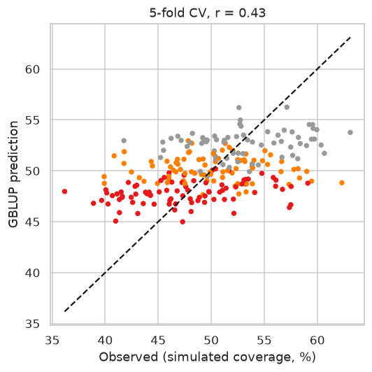
124
[CHECK] The MLM removes inflation (λ_GC below the naive value and near 1), the Chr1 QTL is detected and the prediction accuracy is plausible: positive and below √H² + a margin for sampling noise.
Code
assert lam(res.p) < lam(naive.p) and lam(res.p) <1.2# [CHECK] structure controlledassert qtl_tab.found.iloc[-1] # [CHECK] the Chr1 QTL is recoveredassert0< acc["GBLUP"] < np.sqrt(h2_sim) +0.15# [CHECK] plausible accuracy
GWAS on real HapMap3 genotypes
Now the same mixed-model GWAS on real markers. The genotypes are the HapMap 3.2.1 calls for the maize 282 association panel (Bukowski et al. 2018; whole-genome sequencing at about 7x, AGPv4 coordinates, not imputed), from the public MaizeGDB/Panzea Box share. The scan runs outside the notebook with two scripts in maize_uav_htp/genotypes/ because it reads 32 GB of VCFs and tests 14 million SNPs 24 times:
Step
Script
What it does
Download and filter
01_download_filter.sh
Streams each chromosome VCF (32.4 GB in total), keeps our lines, biallelic SNPs, MAF > 0.05 and call rate ≥ 0.8 with PLINK 2, writes a compact PLINK fileset and deletes the raw VCF
Association
02_gwas.py
Merges chromosomes; LD pruning (10 kb window, r² ≥ 0.1) to count independent SNPs; 3 PCs; centred kinship and one LMM Wald test per trait with GEMMA 0.98.5; keeps SNPs with p < 10⁻³, a 0.5% random background, λ_GC and candidate regions
The traits are the genotype means (over the two replicates) of reference-replicate canopy coverage (ExG 131) on each of the 12 dates under +N and −N: 24 scans. The model is the paper’s: y = Wα + xβ + u + ε with the intercept and 3 PCs in W and u ~ N(0, Kσ²_g). The significance threshold is the paper’s 1/n, with n the number of LD-pruned independent SNPs, and a region is called when more than five significant SNPs fall within merged ±50 kb windows.
Differences from the paper to keep in mind: we genotype 214 of the 233 lines (19 field names have no sequenced sample in the 282 set), and the extra call-rate filter leaves about 14 million SNPs instead of 21 million.
Code
GENO = DATA /"genotypes"# real-genotype GWAS folderRES_G = GENO /"results"# outputs of 02_gwas.pyRUN_GWAS =False# True reruns the pipeline (hours, 32 GB download)if RUN_GWAS: # optional full rerunimport subprocess # run the two pipeline scripts subprocess.run(["bash", "01_download_filter.sh"], cwd=GENO, check=True) subprocess.run([sys.executable, "02_gwas.py"], cwd=GENO, check=True)gmeta = json.loads((RES_G /"gwas_meta.json").read_text()) # panel and thresholdidmap = pd.read_csv(GENO /"genotype_to_vcf_id.csv") # field name to VCF sampleprint(f"Lines genotyped: {gmeta['n_lines']} of {len(idmap)} "f"({idmap.match.value_counts().to_dict()}); phenotyped and genotyped: {gmeta['n_lines_phenotyped']}")print(f"SNPs tested: {gmeta['n_snps']:,}; independent after LD pruning: {gmeta['n_independent']:,} "f"-> threshold p < {gmeta['threshold']:.1e} (paper: 769,690 -> 1.2e-06)")
Lines genotyped: 214 of 233 ({'exact': 198, 'none': 19, 'case': 8, 'alias': 8}); phenotyped and genotyped: 214
SNPs tested: 14,007,199; independent after LD pruning: 459,162 -> threshold p < 2.2e-06 (paper: 769,690 -> 1.2e-06)
Code
gsum = pd.read_csv(RES_G /"gwas_summary.csv") # one row per scangsum[["trt", "date"]] = gsum.trait.str.extract(r"CC_(PN|MN)_(\w+)") # treatment and date from the trait namegsum["N level"] = gsum.trt.map({"PN": "+N", "MN": "-N"}) # readable treatmentgsum_tab = (gsum.pivot(index="date", columns="N level", values=["lambda_gc", "n_sig", "n_regions"]) # date x trt .reindex(DATES).round(3))gsum_tab # inflation, hits and regions per scan
lambda_gc
n_sig
n_regions
N level
+N
-N
+N
-N
+N
-N
date
July6
1.023
1.057
33.0
15.0
1.0
0.0
Aug12
1.028
1.036
72.0
79.0
2.0
2.0
Aug14
1.027
1.033
28.0
64.0
1.0
2.0
Aug16
1.030
1.030
23.0
63.0
1.0
2.0
Aug20
1.034
1.036
22.0
65.0
1.0
2.0
Aug22
1.021
1.021
31.0
63.0
1.0
2.0
Aug23
1.027
1.026
205.0
72.0
3.0
2.0
Aug26
1.019
1.023
96.0
77.0
4.0
3.0
Aug30
1.024
1.023
45.0
69.0
1.0
2.0
Sept1
1.018
1.020
31.0
52.0
1.0
2.0
Sept3
1.026
1.019
30.0
45.0
1.0
1.0
Sept5
1.021
1.017
24.0
23.0
1.0
0.0
Code
def load_top(trait):"""SNPs with p < 1e-3 plus a 0.5% random background for one real-GWAS trait.""" t = pd.read_parquet(RES_G /f"{trait}.top.parquet") # reduced GEMMA output t["gpos"] = t.chr.map(offset) + t.ps # genome-wide coordinatereturn tpub_cc = gw[gw.trait =="Canopy"] # published canopy regions (Table S3)fig, axes = plt.subplots(2, 1, figsize=(15, 7), sharex=True) # Manhattan plots for Aug 12for ax, (trait, lab) inzip(axes, [("CC_PN_Aug12", "+N"), ("CC_MN_Aug12", "-N")]): t = load_top(trait) # one scanfor c in CHR_LEN: # alternate chromosome colours s = t[t.chr== c] ax.scatter(s.gpos /1e6, -np.log10(s.p_wald), s=3, color="C0"if c %2else"0.55", rasterized=True) ax.axhline(-np.log10(gmeta["threshold"]), color="k", ls="--", lw=1, label="1/n threshold") # paper's threshold pub = pub_cc[(pub_cc.date =="12-Aug") & (pub_cc.treatment.str.startswith("High"if lab =="+N"else"Low"))] ax.scatter((pub.chrom.map(offset) + pub.pos_lead) /1e6, np.full(len(pub), 0.5), marker="^", color="red", s=50, label="published lead SNPs (Table S3)") # paper's peaks for the same scan ax.set(ylabel="−log10(p)", title=f"Canopy coverage, Aug 12, {lab} (λ_GC = "f"{gsum.set_index('trait').loc[trait, 'lambda_gc']:.2f})"); ax.legend(loc="upper right", fontsize=8)for c, o in offset.items(): # chromosome labels axes[1].text((o + CHR_LEN[c] /2) /1e6, -0.12, f"Chr{c}", ha="center", transform=axes[1].get_xaxis_transform())axes[1].set_xticks([]); plt.tight_layout(); plt.savefig(OUT /"figures/gwas_real_manhattan_aug12.png"); plt.show()
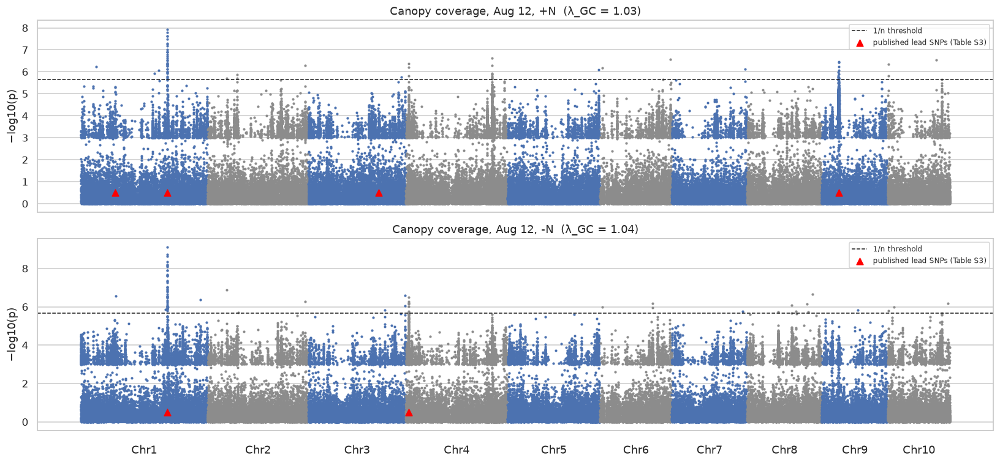
Code
fig, ax = plt.subplots(figsize=(11, 4)) # zoom on the HCF244 region (Figure 5B)for trait, c in [("CC_MN_Aug12", TRT_COL["No Nitrogen"]), ("CC_PN_Aug12", TRT_COL["Nitrogen"])]: t = load_top(trait) # one scan z = t[(t.chr==1) & t.ps.between(208.5e6, 209.5e6)] # 1 Mb window ax.scatter(z.ps /1e6, -np.log10(z.p_wald), s=10, color=c, label=f"{trait} ({len(z)} SNPs, min p = "f"{z.p_wald.min():.1e})")ax.axhline(-np.log10(gmeta["threshold"]), color="k", ls="--", lw=1) # thresholdax.axvline(209_091_350/1e6, color="red", lw=1, label="published lead SNP (209.09 Mb)") # paper's lead SNPax.axvspan(208.8, 209.1, color="green", alpha=0.1, label="published region 208.8-209.1 Mb")ax.set(xlabel="Chromosome 1 position (Mb, AGPv4)", ylabel="−log10(p)", title="Canopy coverage, Aug 12: the HCF244 (Zm00001d031997) region")ax.legend(fontsize=8); plt.tight_layout(); plt.savefig(OUT /"figures/gwas_real_chr1_zoom.png"); plt.show()
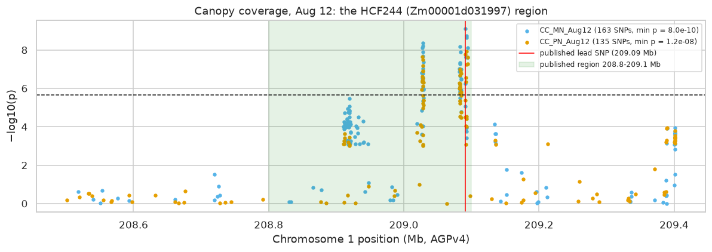
Code
greg = pd.read_csv(RES_G /"gwas_regions.csv") # candidate regions of all 24 scansgreg[["trt", "date"]] = greg.trait.str.extract(r"CC_(PN|MN)_(\w+)") # treatment and dategreg["treatment"] = greg.trt.map({"PN": "High", "MN": "Low"}) # same labels as Table S3ours = merge_regions(greg.assign(trait="Canopy")) # merge across dates and treatmentsloc_ours = (ours.groupby("cluster") # one row per real-GWAS locus .agg(chrom=("chrom", "first"), start=("start", "min"), end=("end", "max"), n_detections=("date", "size"), n_dates=("date", "nunique"), treatments=("treatment", lambda s: "/".join(sorted(set(s)))), best_p=("p_lead", "min")) .reset_index(drop=True))pub_loci = loci[loci.trait =="Canopy"] # published canopy loci (merged above)def overlaps(row, table, gap=100_000):"""True when a locus overlaps (within `gap` bp) any locus of another table.""" t = table[table.chrom == row.chrom] # same chromosomereturnbool(((t.start - gap <= row.end) & (t.end + gap >= row.start)).any())loc_ours["in_paper"] = loc_ours.apply(overlaps, axis=1, table=pub_loci) # replicated published locus?pub_loci = pub_loci.assign(found_here=pub_loci.apply(overlaps, axis=1, table=loc_ours)) # recovered by us?print(f"Real GWAS: {len(greg)} region calls in 24 scans -> {len(loc_ours)} loci; "f"{(loc_ours.n_detections >=3).sum()} detected 3+ times")print(f"Published canopy loci recovered: {pub_loci.found_here.sum()} of {len(pub_loci)}; "f"recurrent (3+) published loci recovered: {pub_loci[pub_loci.n_detections >=3].found_here.sum()} "f"of {(pub_loci.n_detections >=3).sum()}")loc_ours.sort_values("n_detections", ascending=False).head(12)
Real GWAS: 38 region calls in 24 scans -> 11 loci; 3 detected 3+ times
Published canopy loci recovered: 5 of 13; recurrent (3+) published loci recovered: 2 of 7
GEMMA re-estimates the variance ratio for every SNP, which takes about 70 minutes per scan on 14 million SNPs. For all 9 traits × 12 dates × 2 N levels (216 scans) we use 03_gwas_emmax.py, an EMMAX-style version of the same model: the variance ratio is estimated once per trait by REML under the null model and then held fixed (Kang et al. 2010), so every SNP test becomes a shared matrix product. Same kinship, same 3 PCs, same filters and the same threshold. First we check that it reproduces GEMMA on the 24 canopy-coverage scans.
Code
RES_E = GENO /"results_emmax"# EMMAX outputs, all 216 scansesum = pd.read_csv(RES_E /"emmax_summary.csv") # one row per scanesum[["trait_name", "trt", "date"]] = esum.trait.str.extract(r"(\w+?)_(PN|MN)_(\w+)") # split trait labelval = [] # GEMMA vs EMMAX on canopy coveragefor tr in gsum.trait: # the 24 GEMMA scans a = pd.read_parquet(RES_G /f"{tr}.top.parquet") # GEMMA p < 1e-3 + background b = pd.read_parquet(RES_E /f"{tr}.top.parquet") # EMMAX p < 1e-3 + background m = a.merge(b, on=["chr", "ps"], suffixes=("_gemma", "_emmax")) # SNPs kept by both m = m[(m.p_wald_gemma <1e-3) & (m.p_wald_emmax <1e-3)] # association tail only r = np.corrcoef(-np.log10(m.p_wald_gemma), -np.log10(m.p_wald_emmax))[0, 1] iflen(m) >2else np.nan val.append({"trait": tr, "r_log10p_tail": r, "n_snps": len(m),"regions_gemma": int(gsum.set_index("trait").loc[tr, "n_regions"]),"regions_emmax": int(esum.set_index("trait").loc[tr, "n_regions"])})val = pd.DataFrame(val) # validation tableprint(f"Median correlation of -log10(p) (GEMMA vs EMMAX, p < 1e-3 SNPs): {val.r_log10p_tail.median():.3f}; "f"regions GEMMA {val.regions_gemma.sum()} vs EMMAX {val.regions_emmax.sum()}")val.describe().loc[["mean", "min", "max"]].round(3)
Median correlation of -log10(p) (GEMMA vs EMMAX, p < 1e-3 SNPs): 0.964; regions GEMMA 38 vs EMMAX 28
ereg = pd.read_csv(RES_E /"emmax_regions.csv") # candidate regions of all scansereg[["trait_name", "trt", "date"]] = ereg.trait.str.extract(r"(\w+?)_(PN|MN)_(\w+)")ereg["Trait"] = ereg.trait_name.replace({"CC": "Canopy"}) # paper namingereg["treatment"] = ereg.trt.map({"PN": "High", "MN": "Low"}) # same labels as Table S3rloci = [] # loci merged across dates per traitfor tr, sub in ereg.groupby("Trait"): # each trait mm = merge_regions(sub) # merge overlapping regions (100 kb gap)for cid, x in mm.groupby("cluster"): # one row per locus rloci.append({"trait": tr, "chrom": x.chrom.iloc[0], "start": x.start.min(), "end": x.end.max(),"n_detections": len(x), "n_dates": x.date.nunique(),"treatments": "/".join(sorted(set(x.treatment))), "best_p": x.p_lead.min()})rloci = pd.DataFrame(rloci) # real-GWAS loci, all traitsrloci["in_paper"] = [overlaps(r, loci[loci.trait == r.trait]) for r in rloci.itertuples()] # same-trait matchloci_cmp = loci.assign(found_here=[overlaps(r, rloci[rloci.trait == r.trait]) for r in loci.itertuples()])cmp= pd.DataFrame({"real loci": rloci.groupby("trait").size(), # our loci per trait"real recurrent (3+)": rloci[rloci.n_detections >=3].groupby("trait").size(),"published loci": loci.groupby("trait").size(),"published recurrent (3+)": loci[loci.n_detections >=3].groupby("trait").size(),"published recovered": loci_cmp.groupby("trait").found_here.sum(),"published recurrent recovered": loci_cmp[loci_cmp.n_detections >=3].groupby("trait").found_here.sum()} ).reindex(TR9).fillna(0).astype(int)rloci.to_csv(OUT /"tables/gwas_real_loci_all_traits.csv", index=False) # exportcmp
real loci
real recurrent (3+)
published loci
published recurrent (3+)
published recovered
published recurrent recovered
trait
Canopy
3
3
13
7
3
2
ExG
17
0
19
1
5
1
GLI
17
0
20
1
6
1
MGR
17
0
16
0
4
0
NGR
17
0
15
0
4
0
RGB
17
0
18
1
6
1
VARI
17
1
16
0
3
0
VEG
21
3
19
2
5
1
Woebbecke
51
7
84
16
27
8
Code
rloci["gpos"] = rloci.chrom.map(offset) + (rloci.start + rloci.end) /2# genome coordinatefig, axes = plt.subplots(2, 1, figsize=(14, 8), sharex=True) # published vs real, Figure 5A stylefor ax, (tab, title) inzip(axes, [(loci, "Published (Table S3, 231 lines, ~21 M SNPs)"), (rloci, "This notebook (214 lines, 14 M SNPs; canopy and VIs, EMMAX)")]):for i, tr inenumerate(TR9): # one track per trait s = tab[tab.trait == tr] ax.scatter(s.gpos /1e6, np.full(len(s), i), s=12+25* s.n_detections, c=s.n_detections, cmap="viridis", vmin=1, vmax=8, alpha=0.6, edgecolor="k", lw=0.3)for c, o in offset.items(): # chromosome boundaries ax.axvline(o /1e6, color="0.85", lw=0.8) ax.axvline((offset[1] +209e6) /1e6, color="green", ls="--", lw=1) # HCF244 locus ax.set_yticks(range(len(TR9))); ax.set_yticklabels(TR9); ax.set_title(title)axes[1].set_xlabel("Genome position (Mb, AGPv4)")plt.colorbar(axes[1].collections[0], ax=axes, label="Detections (dates x N levels)", fraction=0.02)plt.savefig(OUT /"figures/gwas_real_vs_published_loci.png"); plt.show()
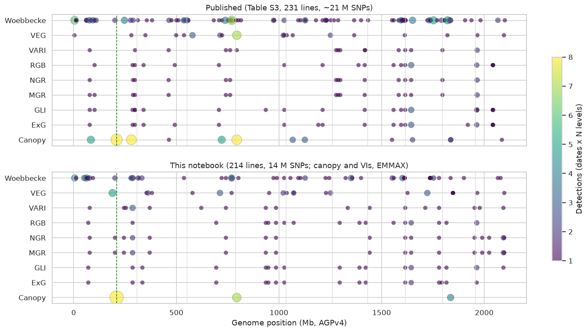
What the real genotypes show.
The headline locus replicates exactly. The chromosome 1 canopy-coverage locus is called in 18 of the 24 GEMMA scans (9 dates, both N levels; best p = 8.0 × 10⁻¹⁰), and its lead SNP in the −N Aug 12 scan, the scan shown in Figure 5B of the paper, is the same SNP the paper reports, 209,091,350, next to Zm00001d031997 (HCF244). A second canopy locus, chromosome 4 near 7.3 Mb, also replicates on 6 dates under both N levels.
Inflation is controlled. λ_GC is 1.02 to 1.06 in GEMMA and 0.91 to 1.04 across all 216 EMMAX scans: kinship plus 3 PCs handle the structure of the panel.
Fewer, but the strongest, signals. We call 38 canopy regions (11 loci) against the paper’s 55 (13 loci) and recover 5 of the 13 published canopy loci, including 2 of the 7 found on three or more dates. With 214 instead of 231 lines and 14 instead of 21 million SNPs, the weaker, single-date peaks are the first to drop below the threshold. Recurrence across dates remains the best guide to which signals are real.
EMMAX agrees with GEMMA. On the canopy scans, −log10 p of the association tail correlates at r = 0.96 (median) between the two engines, and the same loci are called; EMMAX is slightly conservative (28 vs 38 region calls) because it fixes the variance ratio instead of re-estimating it per SNP.
VIs are not eight independent traits. MGRVI is a monotonic transform of NGRDI and gives identical hits; ExG, GLI and RGBVI correlate above 0.99 across lines. The VIs collapse into about four signals (ExG/GLI/RGBVI, NGRDI/MGRVI/VARI, VEG, Woebbecke), so counting regions per VI overstates the evidence. Woebbecke, the most heritable index (SNP h² ≈ 0.85), gives the most regions (77; paper 144) and the most recurrent ones, and 8 of its 16 recurrent published loci are recovered.
Genomic prediction with real genotypes
GWAS finds a few large-effect loci; most of the genetic variance of canopy coverage and greenness is spread over many small effects. Genomic prediction uses all markers at once. With GBLUP the genetic values of untested lines are predicted from their genomic relationships to the tested lines,
using the real kinship matrix of the 214 lines (GEMMA centred relatedness from all 14 million SNPs). We ask four questions:
How accurate is it? Repeated 5-fold cross-validation for canopy coverage and the 8 VIs on every date and N level. Accuracy is the correlation between predicted and observed genotype means; its ceiling is roughly √h².
Does it work for ground truth? Leaf N, leaf area and 20-kernel weight (genotype means per N level).
Can +N data predict −N performance? Train on genotype means under +N, test on held-out lines under −N.
Does it transfer across genetic groups? Leave one PC-defined subpopulation out.
Code
Kr = np.loadtxt(RES_G /"kinship_cXX.txt") # real centred kinship, 214 x 214kid = (RES_G /"kinship_ids.txt").read_text().split() # VCF sample ids in kinship orderidm = idmap.dropna() # matched lines onlygp_lines = pd.Series(kid).map(dict(zip(idm.vcf_id, idm.Genotype))).to_numpy() # field genotype namesprint(f"Kinship: {Kr.shape}, mean diagonal {Kr.diagonal().mean():.2f}, "f"mean off-diagonal {(Kr.sum() - np.trace(Kr)) / (Kr.size -len(Kr)):.3f}")def gblup_fit_predict(y_tr, K_tr, K_te_tr):"""GBLUP prediction of test lines from training lines; returns predictions and REML h2.""" S, U = np.linalg.eigh(K_tr) # eigen-decomposition of training kinship d = reml_delta(y_tr, np.ones((len(y_tr), 1)), np.clip(S, 1e-8, None), U) # variance ratio by REML mu = y_tr.mean() # interceptreturn mu + K_te_tr @ np.linalg.solve(K_tr + d * np.eye(len(y_tr)), y_tr - mu), 1/ (1+ d)def cv_accuracy(y, K, folds=5, reps=3):"""Mean predictive correlation over repeated k-fold CV, plus genomic h2 and sample size.""" ok = np.isfinite(y); y, K = y[ok], K[np.ix_(ok, ok)] # lines with a phenotype rs = [] # accuracy per repetitionfor rep inrange(reps): # repeat with new fold splits pred = np.full(len(y), np.nan) # out-of-fold predictionsfor tr, te in KFold(folds, shuffle=True, random_state=SEED + rep).split(y): pred[te] = gblup_fit_predict(y[tr], K[np.ix_(tr, tr)], K[np.ix_(te, tr)])[0] rs.append(stats.pearsonr(y, pred)[0]) S, U = np.linalg.eigh(K) # full-data REML for h2 h2g =1/ (1+ reml_delta(y, np.ones((len(y), 1)), np.clip(S, 1e-8, None), U))return np.mean(rs), h2g, len(y)
Kinship: (214, 214), mean diagonal 0.53, mean off-diagonal -0.002
Code
img_traits = {"Canopy": None, **{v: v for v in VI8.values()}} # canopy coverage + 8 normalised VIsgp_rows = [] # one row per trait x date x N levelfor trt in TRT_COL: # +N and -Nfor d in DATES: # 12 flights cov_m = cg[(cg.Treatment == trt) & (cg.date == d)].groupby("Genotype.x")["Percent.Cover"].mean() vi_m = vin[(vin.Treatment == trt) & (vin.date == d)].groupby("Genotype.x")[list(VI8.values())].mean()for name, col in img_traits.items(): # each image trait y = (cov_m if col isNoneelse vi_m[col]).reindex(gp_lines).to_numpy() # genotype means in K order r, h2g, n = cv_accuracy(y, Kr) # CV accuracy and genomic h2 gp_rows.append({"trait": name, "Treatment": trt, "date": d, "r": r, "h2_g": h2g, "n": n})gp = pd.DataFrame(gp_rows) # long results tablegp["ceiling"] = np.sqrt(gp.h2_g) # approximate upper bound of accuracygp.to_csv(OUT /"tables/genomic_prediction_real.csv", index=False) # export(gp.groupby("trait")[["r", "h2_g", "ceiling"]].mean() # season means per trait .sort_values("r", ascending=False).round(3))
r
h2_g
ceiling
trait
Woebbecke
0.465
0.787
0.881
VEG
0.436
0.729
0.847
Canopy
0.366
0.642
0.782
ExG
0.249
0.556
0.731
RGBVI
0.236
0.541
0.719
GLI
0.227
0.529
0.710
NGRDI
0.189
0.465
0.658
MGRVI
0.188
0.461
0.655
VARI
0.165
0.426
0.621
Code
fig, axes = plt.subplots(1, 2, figsize=(15, 4.5), sharey=True) # accuracy over the seasonfor ax, trt inzip(axes, TRT_COL): # +N and -N panels piv = gp[gp.Treatment == trt].pivot(index="date", columns="trait", values="r").loc[DATES]for tr in ["Canopy", "VEG", "Woebbecke", "ExG", "VARI"]: # representative traits ax.plot([LABEL[d] for d in DATES], piv[tr], marker="o", ms=3, lw=2.5if tr =="Canopy"else1.2, color="k"if tr =="Canopy"elseNone, label=tr) ax.axhline(0, color="0.6", lw=0.8); ax.tick_params(axis="x", rotation=45) ax.set_title(f"GBLUP 5-fold accuracy, {TRT_LAB[trt]}")axes[0].set_ylabel("Predictive correlation r"); axes[1].legend(fontsize=8)plt.tight_layout(); plt.savefig(OUT /"figures/genomic_prediction_real.png"); plt.show()
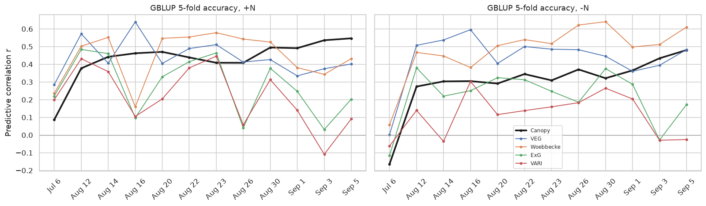
Code
field_gp = [] # ground-truth traitstr_tab = truth.merge(fb[["Row", "Genotype", "Treatment"]], on="Row") # plot traits with genotype and N levelfor trt in TRT_COL: # per N level m = tr_tab[tr_tab.Treatment == trt].groupby("Genotype")[["Leaf N", "Leaf area", "20 kernel weight"]].mean()for c in m: # each ground-truth trait r, h2g, n = cv_accuracy(m[c].reindex(gp_lines).to_numpy(), Kr) field_gp.append({"trait": c, "N level": TRT_LAB[trt], "r": r, "h2_g": h2g, "ceiling": np.sqrt(h2g), "n": n})pd.DataFrame(field_gp).round(3)
trait
N level
r
h2_g
ceiling
n
0
Leaf N
+N
0.246
0.666
0.816
203
1
Leaf area
+N
0.464
0.876
0.936
204
2
20 kernel weight
+N
0.358
0.780
0.883
158
3
Leaf N
-N
0.402
0.613
0.783
194
4
Leaf area
-N
0.411
0.876
0.936
194
5
20 kernel weight
-N
0.379
0.849
0.921
131
Code
cross = [] # +N training, -N testingfor d in DATES[1:]: # two-replicate flights pn = cg[(cg.Treatment =="Nitrogen") & (cg.date == d)].groupby("Genotype.x")["Percent.Cover"].mean() mn = cg[(cg.Treatment =="No Nitrogen") & (cg.date == d)].groupby("Genotype.x")["Percent.Cover"].mean() pn, mn = pn.reindex(gp_lines).to_numpy(), mn.reindex(gp_lines).to_numpy() # kinship order ok = np.isfinite(pn) & np.isfinite(mn) # lines observed in both pk, mk, Kk = pn[ok], mn[ok], Kr[np.ix_(ok, ok)] same, other = np.full(ok.sum(), np.nan), np.full(ok.sum(), np.nan)for trn, te in KFold(5, shuffle=True, random_state=SEED).split(mk): # same held-out lines for both same[te] = gblup_fit_predict(mk[trn], Kk[np.ix_(trn, trn)], Kk[np.ix_(te, trn)])[0] # -N -> -N other[te] = gblup_fit_predict(pk[trn], Kk[np.ix_(trn, trn)], Kk[np.ix_(te, trn)])[0] # +N -> -N cross.append({"date": LABEL[d], "-N from -N": stats.pearsonr(mk, same)[0],"-N from +N": stats.pearsonr(mk, other)[0], "phenotypic r(+N, -N)": stats.pearsonr(pk, mk)[0]})pd.DataFrame(cross).set_index("date").round(3)
-N from -N
-N from +N
phenotypic r(+N, -N)
date
Aug 12
0.264
0.273
0.880
Aug 14
0.286
0.334
0.858
Aug 16
0.291
0.323
0.863
Aug 20
0.268
0.315
0.857
Aug 22
0.321
0.332
0.865
Aug 23
0.304
0.309
0.856
Aug 26
0.375
0.357
0.855
Aug 30
0.320
0.355
0.824
Sep 1
0.360
0.385
0.854
Sep 3
0.437
0.433
0.852
Sep 5
0.488
0.476
0.882
Code
pcs_r = pd.read_csv(RES_G /"pca.eigenvec", sep="\t").set_index("IID").loc[kid, ["PC1", "PC2", "PC3"]] # real PCsfrom sklearn.cluster import KMeans # group lines by population structuregrp = KMeans(3, n_init=10, random_state=SEED).fit_predict(pcs_r) # three PC-defined groupsy = cg[(cg.Treatment =="No Nitrogen") & (cg.date =="Aug12")].groupby("Genotype.x")["Percent.Cover"].mean()y = y.reindex(gp_lines).to_numpy(); ok = np.isfinite(y) # -N Aug 12 canopy coverageyk, Kk, gk = y[ok], Kr[np.ix_(ok, ok)], grp[ok]lopo, rand = np.full(ok.sum(), np.nan), cv_accuracy(y, Kr)[0] # leave-one-group-out vs random CVfor g inrange(3): # hold out each group in turn te, trn = np.where(gk == g)[0], np.where(gk != g)[0] lopo[te] = gblup_fit_predict(yk[trn], Kk[np.ix_(trn, trn)], Kk[np.ix_(te, trn)])[0]fig, ax = plt.subplots(1, 2, figsize=(12, 4.5)) # structure and accuracyax[0].scatter(pcs_r.PC1, pcs_r.PC2, c=grp, cmap="Set1", s=15) # PC map of the 214 linesax[0].set(xlabel="PC1", ylabel="PC2", title=f"Real population structure (group sizes {np.bincount(grp).tolist()})")acc_g = [stats.pearsonr(yk[gk == g], lopo[gk == g])[0] for g inrange(3)] # accuracy within each held-out groupax[1].bar(["random 5-fold"] + [f"group {g} held out"for g inrange(3)], [rand] + acc_g, color=["C0", "C3", "C3", "C3"])ax[1].axhline(0, color="k", lw=0.8); ax[1].set(ylabel="Predictive correlation r", title="Canopy coverage, -N, Aug 12")plt.tight_layout(); plt.show()
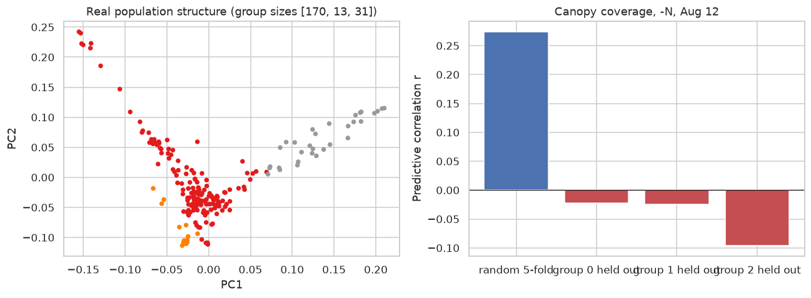
Code
gm_tr = gp.groupby("trait")[["r", "ceiling"]].mean() # season means per traitassert (gm_tr.r >0).all() and (gm_tr.r < gm_tr.ceiling).all() # [CHECK] positive, below the sqrt(h2) ceiling
What genomic prediction shows.
Accuracy follows heritability. Over the season, GBLUP predicts Woebbecke (r = 0.47), VEG (0.44) and canopy coverage (0.37) best, and VARI and NGRDI worst (about 0.17 to 0.19), the same order as their genomic h². All lie well below the √h² ceiling, as expected with about 170 training lines per fold.
Ground truth is predictable too. Leaf area (r ≈ 0.41 to 0.46), 20-kernel weight (≈ 0.37) and leaf N (0.25 under +N, 0.40 under −N) can be predicted from markers alone, which is the basis of genomic selection for N-use traits.
+N data predict −N performance. Training on +N genotype means predicts held-out lines under −N as well as training on −N itself (for example 0.27 vs 0.26 on Aug 12, 0.48 vs 0.49 on Sept 5), because canopy coverage under the two N levels is strongly correlated across lines (r ≈ 0.85). For this panel, genotype × N interaction is small relative to genetic main effects.
Prediction does not transfer across genetic groups. Holding out a whole PC-defined subpopulation drops the accuracy to about zero, against 0.27 with random folds. Random cross-validation measures prediction for relatives of the training set; a breeding program predicting unrelated germplasm should expect much less.
Phenomic prediction of leaf nitrogen
Back to real data. Single VI-date correlations reach R = 0.73 for leaf N. Can all eight VIs on all 12 dates together predict leaf N better, and does the model generalise to unseen genotypes? We compare ridge regression and a random forest under two cross-validation schemes:
random 5-fold over plots, where the same genotype can sit in training (other rep) and test;
grouped 5-fold by genotype, which mimics predicting new lines and is the honest scheme for breeding.
Code
wide = (vin.pivot_table(index="Row", columns="date", values=list(VI8.values())) # VI x date features per plot .dropna(axis=1, thresh=0.95* vin.Row.nunique())) # drop sparse columnswide.columns = [f"{v}_{d}"for v, d in wide.columns] # flat namesdata = (wide.join(truth.set_index("Row")["Leaf N"], how="inner") # attach leaf N .join(fb.set_index("Row")[["Genotype", "Treatment"]]).dropna()) # attach groupsX, y_n, groups = data[wide.columns].to_numpy(), data["Leaf N"].to_numpy(), data.Genotype.to_numpy()models = {"Ridge": make_pipeline(StandardScaler(), RidgeCV(alphas=np.logspace(-2, 4, 40))), # linear"Random forest": RandomForestRegressor(400, min_samples_leaf=3, random_state=SEED, n_jobs=-1)}schemes = {"random 5-fold": KFold(5, shuffle=True, random_state=SEED), "by genotype": GroupKFold(5)}pp = [] # resultsfor mname, mdl in models.items(): # each modelfor sname, cv in schemes.items(): # each CV scheme pr = cross_val_predict(mdl, X, y_n, cv=cv, groups=groups) # out-of-fold predictions pp.append({"model": mname, "cv": sname, "r": stats.pearsonr(y_n, pr)[0],"RMSE (%N)": np.sqrt(np.mean((y_n - pr) **2)), "R2": 1- np.sum((y_n - pr) **2) / np.sum((y_n - y_n.mean()) **2)})pp = pd.DataFrame(pp) # tableprint(f"{len(y_n)} plots with leaf N, {X.shape[1]} VI-date predictors; best single VI-date |r| = "f"{cors[cors.trait =='Leaf N'].r.abs().max():.2f}")pp.round(3)
498 plots with leaf N, 88 VI-date predictors; best single VI-date |r| = 0.73
model
cv
r
RMSE (%N)
R2
0
Ridge
random 5-fold
0.815
0.320
0.664
1
Ridge
by genotype
0.809
0.325
0.655
2
Random forest
random 5-fold
0.818
0.318
0.669
3
Random forest
by genotype
0.821
0.315
0.674
Combining all VIs and dates (r ≈ 0.82) beats the best single VI-date correlation (0.73), and grouping folds by genotype costs almost nothing here, because most of the signal is the N treatment and canopy greenness rather than genotype identity. With a trait dominated by genotype, grouped folds would be clearly less optimistic; always report the scheme that matches the deployment question.
Export, summary and exercises
Code
exports = {"canopy_n_response_genotypes.csv": geno_test, "canopy_n_response_checks.csv": check_test,"vi_n_effect_checks.csv": vi_trt, "season_traits.csv": season,"gwas_recurrent_loci.csv": recurrent, "phenomic_prediction.csv": pp,"vi_normalised_plot_table.csv": vin.drop(columns=["Filename", "file"])} # main resultsfor name, df in exports.items(): # write each table df.to_csv(OUT /"tables"/ name, index=False)manifest =sorted(str(p.relative_to(OUT)) for p in OUT.rglob("*") if p.is_file()) # everything produced(OUT /"manifest.txt").write_text("\n".join(manifest)) # artefact listprint("\n".join(manifest))
ExG 131 gives the largest +N/−N separation on the checks
Canopy coverage +N > −N, ratio 1.24 on July 6, fading by Sept 5
Reproduced exactly at genotype level (paired t-tests match the published table)
17 genotypes with ratio > 1.5
17 (season-mean ratio)
VIs depend on light value and saturation; normalise by both
Reproduced; normalised VIs separate +N from −N
VEG vs leaf N R = 0.73, Woebbecke vs leaf area R = −0.52, VARI vs 20-kernel weight R = 0.40 (Aug 22)
Reproduced
29 regions detected at 3+ time points; Chr1 208.8 to 209.1 Mb canopy locus (HCF244) under both N levels
28 with our merge rule; Chr1 locus on 8 dates under both N levels
GEMMA GWAS on HapMap3: Chr1 canopy locus, lead SNP 209,091,350 (−N Aug 12)
Rerun on real genotypes: same lead SNP, 9 dates, both N levels, p = 8.0 × 10⁻¹⁰; Chr4 locus also replicated; 5 of 13 published canopy loci recovered
Added beyond the paper: season traits from the time series, heritability of every image trait by date (canopy coverage is the most heritable), a fast EMMAX scan of all 216 image traits validated against GEMMA, genomic prediction of image and field traits from real genotypes (including +N to −N transfer and across-group prediction), and phenomic prediction of leaf N with honest cross-validation.
Interpretation and limitations
RGB VIs are proxies of greenness, not chlorophyll or N measurements; they inherit camera exposure, white balance and time-of-day effects. Fix camera settings, fly at the same time of day and keep a reference panel in view.
Treatment is confounded with quadrant; the hybrid checks help but cannot remove soil differences between quadrants.
Twelve flights with a 37-day gap cannot resolve early growth; curve parameters need denser sampling.
With 214 genotyped lines GWAS detects only larger-effect loci; recurrence across dates is evidence, not proof. Candidate genes such as Zm00001d031997 need validation (mutants, expression, fine-mapping).
The HapMap3 282-panel calls are low depth (about 7x) and not imputed; the call-rate filter removes a third of the SNPs, and 19 field lines have no sequenced sample. The simulated section teaches methods only.
Exercises
[EXERCISE] Filter sensitivity. Repeat the canopy N-response test with the Otsu post filter. Which dates lose significance?
[EXERCISE] Threshold sweep. On the raw frame, vary the fixed ExG threshold from 120 to 145 and plot canopy coverage. How sensitive is coverage near 131?
[EXERCISE] Normalisation. Recompute the Figure 3A correlations with raw (unnormalised) VIs. On which dates does normalisation help most?
[EXERCISE] Within-treatment correlations. Compute VEG vs leaf N separately for +N and −N on Aug 22. How much of R = 0.73 is due to the treatment?
[EXERCISE] Season traits. Which season trait (max, AUC, senescence rate) has the highest heritability? Adapt heritability() to the season table.
[EXERCISE] Spatial model. Replace range-within-quadrant with a 2D polynomial of fcol and frange per quadrant. Does H² of canopy coverage increase?
[EXERCISE] GWAS power. Rerun the simulation with H² = 0.3 and 0.8 and with 50 instead of 12 QTL. How many QTL are recovered?
[EXERCISE] Covariates. Run the MLM without PCs (kinship only) and with PCs only. Compare λ_GC.
[EXERCISE] CV design. Compare 5-fold GBLUP accuracy with leave-one-subpopulation-out prediction. Why is it lower?
[EXERCISE] Reproducibility. Execute the notebook from a clean kernel with jupyter nbconvert --to notebook --execute and compare the output tables.
References
Rodene, E., Xu, G., Palali Delen, S., Smith, C., Ge, Y., Schnable, J., Yang, J. (2021). A UAV-based high-throughput phenotyping approach to assess time-series nitrogen responses and identify trait-associated genetic components in maize. bioRxiv 2021.05.24.445447. Code and data: github.com/jyanglab/UAV-based_HTP.
Woebbecke, D. M., Meyer, G. E., Von Bargen, K., Mortensen, D. A. (1995). Color indices for weed identification under various soil, residue, and lighting conditions. Transactions of the ASAE 38(1), 259-269.
Meyer, G. E., Neto, J. C. (2008). Verification of color vegetation indices for automated crop imaging applications. Computers and Electronics in Agriculture 63, 282-293.
Flint-Garcia, S. A., et al. (2005). Maize association population: a high-resolution platform for quantitative trait locus dissection. The Plant Journal 44(6), 1054-1064.
Bukowski, R., et al. (2018). Construction of the third-generation Zea mays haplotype map. GigaScience 7(4).
Zhou, X., Stephens, M. (2012). Genome-wide efficient mixed-model analysis for association studies. Nature Genetics 44, 821-824.
Kang, H. M., et al. (2010). Variance component model to account for sample structure in genome-wide association studies (EMMAX). Nature Genetics 42, 348-354.
VanRaden, P. M. (2008). Efficient methods to compute genomic predictions. Journal of Dairy Science 91, 4414-4423.
Endelman, J. B. (2011). Ridge regression and other kernels for genomic selection with R package rrBLUP. The Plant Genome 4, 250-255.
Araus, J. L., Cairns, J. E. (2014). Field high-throughput phenotyping: the new crop breeding frontier. Trends in Plant Science 19(1), 52-61.